Portfolios 5
Qilin Zhang
2023-04-20
###cleaning
##rename
data_cleaned <- data
#prepare dataframe for different scales
DGS <- data_cleaned[grep("DGS_1",colnames(data_cleaned)):grep("DGS_75",colnames(data_cleaned))]
DGS <- DGS[,-c(grep("DGS_31",colnames(DGS)),grep("DGS_53",colnames(DGS)))]
HEXACO_C <- data_cleaned[grep("HEXACO_C_1",colnames(data_cleaned)):grep("HEXACO_C_10",colnames(data_cleaned))]###IRT
#6 factors model without behavioral items
DGS_6model_1 <- DGS %>%
select(c(DGS_4,DGS_12,DGS_15,DGS_17,DGS_18,DGS_19,DGS_22,DGS_30,DGS_32,DGS_33,DGS_34,DGS_36,DGS_56,DGS_49,DGS_57,DGS_58,DGS_60,DGS_61,DGS_63,DGS_74,DGS_75))
DGS_6model_2 <- DGS %>%
select(c(DGS_5,DGS_10,DGS_26,DGS_41,DGS_54,DGS_69,DGS_72))
DGS_6model_3 <- DGS %>%
select(c(DGS_9,DGS_20,DGS_27,DGS_29,DGS_46,DGS_52))
DGS_6model_4 <- DGS %>%
select(c(DGS_2,DGS_11,DGS_28,DGS_35,DGS_48,DGS_68))
DGS_6model_5 <- DGS %>%
select(c(DGS_1,DGS_21,DGS_44,DGS_65))
DGS_6model_6 <- DGS %>%
select(c(DGS_6,DGS_38,DGS_39,DGS_45,DGS_67,DGS_70,DGS_71))6 factors (dropping rule is loading in IFA < 0.3)
DGS_IRT6_1 = mirt(data = DGS_6model_1,
model = 1, #this is for one factor
itemtype = "gpcmIRT" #generalized partial credit model
)##
Iteration: 1, Log-Lik: -23810.939, Max-Change: 1.76991
Iteration: 2, Log-Lik: -23151.552, Max-Change: 0.59635
Iteration: 3, Log-Lik: -23075.016, Max-Change: 0.65407
Iteration: 4, Log-Lik: -23034.881, Max-Change: 0.62164
Iteration: 5, Log-Lik: -23014.503, Max-Change: 0.22179
Iteration: 6, Log-Lik: -23003.372, Max-Change: 0.21407
Iteration: 7, Log-Lik: -22995.166, Max-Change: 0.17198
Iteration: 8, Log-Lik: -22991.077, Max-Change: 0.19971
Iteration: 9, Log-Lik: -22987.282, Max-Change: 0.14771
Iteration: 10, Log-Lik: -22983.874, Max-Change: 0.09406
Iteration: 11, Log-Lik: -22981.987, Max-Change: 0.06661
Iteration: 12, Log-Lik: -22980.452, Max-Change: 0.07092
Iteration: 13, Log-Lik: -22978.765, Max-Change: 0.08887
Iteration: 14, Log-Lik: -22977.775, Max-Change: 0.07407
Iteration: 15, Log-Lik: -22977.022, Max-Change: 0.01896
Iteration: 16, Log-Lik: -22976.716, Max-Change: 0.01523
Iteration: 17, Log-Lik: -22976.239, Max-Change: 0.06561
Iteration: 18, Log-Lik: -22975.843, Max-Change: 0.01564
Iteration: 19, Log-Lik: -22975.541, Max-Change: 0.01965
Iteration: 20, Log-Lik: -22975.247, Max-Change: 0.01696
Iteration: 21, Log-Lik: -22974.989, Max-Change: 0.01360
Iteration: 22, Log-Lik: -22974.543, Max-Change: 0.00893
Iteration: 23, Log-Lik: -22974.382, Max-Change: 0.02466
Iteration: 24, Log-Lik: -22974.232, Max-Change: 0.02444
Iteration: 25, Log-Lik: -22974.028, Max-Change: 0.01067
Iteration: 26, Log-Lik: -22973.914, Max-Change: 0.00602
Iteration: 27, Log-Lik: -22973.818, Max-Change: 0.00832
Iteration: 28, Log-Lik: -22973.650, Max-Change: 0.00582
Iteration: 29, Log-Lik: -22973.579, Max-Change: 0.00734
Iteration: 30, Log-Lik: -22973.514, Max-Change: 0.00407
Iteration: 31, Log-Lik: -22973.452, Max-Change: 0.00656
Iteration: 32, Log-Lik: -22973.397, Max-Change: 0.00347
Iteration: 33, Log-Lik: -22973.351, Max-Change: 0.00379
Iteration: 34, Log-Lik: -22973.247, Max-Change: 0.00306
Iteration: 35, Log-Lik: -22973.212, Max-Change: 0.00418
Iteration: 36, Log-Lik: -22973.181, Max-Change: 0.00244
Iteration: 37, Log-Lik: -22973.130, Max-Change: 0.00340
Iteration: 38, Log-Lik: -22973.101, Max-Change: 0.00236
Iteration: 39, Log-Lik: -22973.076, Max-Change: 0.00507
Iteration: 40, Log-Lik: -22973.036, Max-Change: 0.00247
Iteration: 41, Log-Lik: -22973.017, Max-Change: 0.00162
Iteration: 42, Log-Lik: -22973.003, Max-Change: 0.00115
Iteration: 43, Log-Lik: -22972.969, Max-Change: 0.00321
Iteration: 44, Log-Lik: -22972.954, Max-Change: 0.00142
Iteration: 45, Log-Lik: -22972.945, Max-Change: 0.00094
Iteration: 46, Log-Lik: -22972.930, Max-Change: 0.00174
Iteration: 47, Log-Lik: -22972.918, Max-Change: 0.00096
Iteration: 48, Log-Lik: -22972.911, Max-Change: 0.00201
Iteration: 49, Log-Lik: -22972.900, Max-Change: 0.00176
Iteration: 50, Log-Lik: -22972.894, Max-Change: 0.00085
Iteration: 51, Log-Lik: -22972.890, Max-Change: 0.00105
Iteration: 52, Log-Lik: -22972.883, Max-Change: 0.00102
Iteration: 53, Log-Lik: -22972.878, Max-Change: 0.00143
Iteration: 54, Log-Lik: -22972.873, Max-Change: 0.00095
Iteration: 55, Log-Lik: -22972.870, Max-Change: 0.00069
Iteration: 56, Log-Lik: -22972.868, Max-Change: 0.00063
Iteration: 57, Log-Lik: -22972.865, Max-Change: 0.00057
Iteration: 58, Log-Lik: -22972.862, Max-Change: 0.00101
Iteration: 59, Log-Lik: -22972.862, Max-Change: 0.00082
Iteration: 60, Log-Lik: -22972.858, Max-Change: 0.00126
Iteration: 61, Log-Lik: -22972.858, Max-Change: 0.00118
Iteration: 62, Log-Lik: -22972.855, Max-Change: 0.00163
Iteration: 63, Log-Lik: -22972.854, Max-Change: 0.00125
Iteration: 64, Log-Lik: -22972.853, Max-Change: 0.00052
Iteration: 65, Log-Lik: -22972.853, Max-Change: 0.00021
Iteration: 66, Log-Lik: -22972.853, Max-Change: 0.00042
Iteration: 67, Log-Lik: -22972.852, Max-Change: 0.00026
Iteration: 68, Log-Lik: -22972.852, Max-Change: 0.00051
Iteration: 69, Log-Lik: -22972.852, Max-Change: 0.00021
Iteration: 70, Log-Lik: -22972.852, Max-Change: 0.00086
Iteration: 71, Log-Lik: -22972.852, Max-Change: 0.00034
Iteration: 72, Log-Lik: -22972.851, Max-Change: 0.00069
Iteration: 73, Log-Lik: -22972.851, Max-Change: 0.00073
Iteration: 74, Log-Lik: -22972.849, Max-Change: 0.00078
Iteration: 75, Log-Lik: -22972.849, Max-Change: 0.00025
Iteration: 76, Log-Lik: -22972.849, Max-Change: 0.00022
Iteration: 77, Log-Lik: -22972.849, Max-Change: 0.00052
Iteration: 78, Log-Lik: -22972.848, Max-Change: 0.00081
Iteration: 79, Log-Lik: -22972.848, Max-Change: 0.00016
Iteration: 80, Log-Lik: -22972.848, Max-Change: 0.00038
Iteration: 81, Log-Lik: -22972.848, Max-Change: 0.00059
Iteration: 82, Log-Lik: -22972.848, Max-Change: 0.00015
Iteration: 83, Log-Lik: -22972.848, Max-Change: 0.00033
Iteration: 84, Log-Lik: -22972.847, Max-Change: 0.00060
Iteration: 85, Log-Lik: -22972.847, Max-Change: 0.00018
Iteration: 86, Log-Lik: -22972.847, Max-Change: 0.00035
Iteration: 87, Log-Lik: -22972.847, Max-Change: 0.00071
Iteration: 88, Log-Lik: -22972.847, Max-Change: 0.00020
Iteration: 89, Log-Lik: -22972.847, Max-Change: 0.00040
Iteration: 90, Log-Lik: -22972.846, Max-Change: 0.00016
Iteration: 91, Log-Lik: -22972.846, Max-Change: 0.00069
Iteration: 92, Log-Lik: -22972.846, Max-Change: 0.00027
Iteration: 93, Log-Lik: -22972.846, Max-Change: 0.00054
Iteration: 94, Log-Lik: -22972.846, Max-Change: 0.00084
Iteration: 95, Log-Lik: -22972.844, Max-Change: 0.00022
Iteration: 96, Log-Lik: -22972.843, Max-Change: 0.00053
Iteration: 97, Log-Lik: -22972.843, Max-Change: 0.00029
Iteration: 98, Log-Lik: -22972.843, Max-Change: 0.00069
Iteration: 99, Log-Lik: -22972.843, Max-Change: 0.00022
Iteration: 100, Log-Lik: -22972.843, Max-Change: 0.00019
Iteration: 101, Log-Lik: -22972.843, Max-Change: 0.00045
Iteration: 102, Log-Lik: -22972.843, Max-Change: 0.00073
Iteration: 103, Log-Lik: -22972.843, Max-Change: 0.00067
Iteration: 104, Log-Lik: -22972.843, Max-Change: 0.00021
Iteration: 105, Log-Lik: -22972.842, Max-Change: 0.00052
Iteration: 106, Log-Lik: -22972.842, Max-Change: 0.00092
Iteration: 107, Log-Lik: -22972.841, Max-Change: 0.00090
Iteration: 108, Log-Lik: -22972.840, Max-Change: 0.00025
Iteration: 109, Log-Lik: -22972.840, Max-Change: 0.00024
Iteration: 110, Log-Lik: -22972.840, Max-Change: 0.00057
Iteration: 111, Log-Lik: -22972.840, Max-Change: 0.00019
Iteration: 112, Log-Lik: -22972.840, Max-Change: 0.00016
Iteration: 113, Log-Lik: -22972.840, Max-Change: 0.00039
Iteration: 114, Log-Lik: -22972.840, Max-Change: 0.00012
Iteration: 115, Log-Lik: -22972.840, Max-Change: 0.00052
Iteration: 116, Log-Lik: -22972.840, Max-Change: 0.00020
Iteration: 117, Log-Lik: -22972.839, Max-Change: 0.00041
Iteration: 118, Log-Lik: -22972.840, Max-Change: 0.00085
Iteration: 119, Log-Lik: -22972.839, Max-Change: 0.00091
Iteration: 120, Log-Lik: -22972.838, Max-Change: 0.00043
Iteration: 121, Log-Lik: -22972.838, Max-Change: 0.00022
Iteration: 122, Log-Lik: -22972.838, Max-Change: 0.00045
Iteration: 123, Log-Lik: -22972.837, Max-Change: 0.00018
Iteration: 124, Log-Lik: -22972.837, Max-Change: 0.00015
Iteration: 125, Log-Lik: -22972.837, Max-Change: 0.00029
Iteration: 126, Log-Lik: -22972.837, Max-Change: 0.00012
Iteration: 127, Log-Lik: -22972.837, Max-Change: 0.00051
Iteration: 128, Log-Lik: -22972.837, Max-Change: 0.00020
Iteration: 129, Log-Lik: -22972.837, Max-Change: 0.00040
Iteration: 130, Log-Lik: -22972.837, Max-Change: 0.00028
Iteration: 131, Log-Lik: -22972.837, Max-Change: 0.00011
Iteration: 132, Log-Lik: -22972.837, Max-Change: 0.00023
Iteration: 133, Log-Lik: -22972.837, Max-Change: 0.00014
Iteration: 134, Log-Lik: -22972.837, Max-Change: 0.00027
Iteration: 135, Log-Lik: -22972.836, Max-Change: 0.00011
Iteration: 136, Log-Lik: -22972.836, Max-Change: 0.00047
Iteration: 137, Log-Lik: -22972.836, Max-Change: 0.00019
Iteration: 138, Log-Lik: -22972.836, Max-Change: 0.00037
Iteration: 139, Log-Lik: -22972.836, Max-Change: 0.00026
Iteration: 140, Log-Lik: -22972.836, Max-Change: 0.00052
Iteration: 141, Log-Lik: -22972.836, Max-Change: 0.00020
Iteration: 142, Log-Lik: -22972.836, Max-Change: 0.00017
Iteration: 143, Log-Lik: -22972.836, Max-Change: 0.00034
Iteration: 144, Log-Lik: -22972.836, Max-Change: 0.00014
Iteration: 145, Log-Lik: -22972.836, Max-Change: 0.00012
Iteration: 146, Log-Lik: -22972.836, Max-Change: 0.00024
Iteration: 147, Log-Lik: -22972.836, Max-Change: 0.00046
Iteration: 148, Log-Lik: -22972.836, Max-Change: 0.00015
Iteration: 149, Log-Lik: -22972.836, Max-Change: 0.00030
Iteration: 150, Log-Lik: -22972.835, Max-Change: 0.00012
Iteration: 151, Log-Lik: -22972.835, Max-Change: 0.00049
Iteration: 152, Log-Lik: -22972.835, Max-Change: 0.00020
Iteration: 153, Log-Lik: -22972.835, Max-Change: 0.00040
Iteration: 154, Log-Lik: -22972.835, Max-Change: 0.00027
Iteration: 155, Log-Lik: -22972.835, Max-Change: 0.00011
Iteration: 156, Log-Lik: -22972.835, Max-Change: 0.00021
Iteration: 157, Log-Lik: -22972.835, Max-Change: 0.00013
Iteration: 158, Log-Lik: -22972.835, Max-Change: 0.00027
Iteration: 159, Log-Lik: -22972.835, Max-Change: 0.00011
Iteration: 160, Log-Lik: -22972.835, Max-Change: 0.00044
Iteration: 161, Log-Lik: -22972.835, Max-Change: 0.00018
Iteration: 162, Log-Lik: -22972.835, Max-Change: 0.00036
Iteration: 163, Log-Lik: -22972.835, Max-Change: 0.00024
Iteration: 164, Log-Lik: -22972.835, Max-Change: 0.00048
Iteration: 165, Log-Lik: -22972.834, Max-Change: 0.00020
Iteration: 166, Log-Lik: -22972.834, Max-Change: 0.00016
Iteration: 167, Log-Lik: -22972.834, Max-Change: 0.00033
Iteration: 168, Log-Lik: -22972.834, Max-Change: 0.00013
Iteration: 169, Log-Lik: -22972.834, Max-Change: 0.00011
Iteration: 170, Log-Lik: -22972.834, Max-Change: 0.00021
Iteration: 171, Log-Lik: -22972.834, Max-Change: 0.00044
Iteration: 172, Log-Lik: -22972.834, Max-Change: 0.00014
Iteration: 173, Log-Lik: -22972.834, Max-Change: 0.00029
Iteration: 174, Log-Lik: -22972.834, Max-Change: 0.00012
Iteration: 175, Log-Lik: -22972.834, Max-Change: 0.00049
Iteration: 176, Log-Lik: -22972.834, Max-Change: 0.00019
Iteration: 177, Log-Lik: -22972.834, Max-Change: 0.00038
Iteration: 178, Log-Lik: -22972.834, Max-Change: 0.00027
Iteration: 179, Log-Lik: -22972.834, Max-Change: 0.00011
Iteration: 180, Log-Lik: -22972.834, Max-Change: 0.00022
Iteration: 181, Log-Lik: -22972.834, Max-Change: 0.00013
Iteration: 182, Log-Lik: -22972.833, Max-Change: 0.00026
Iteration: 183, Log-Lik: -22972.833, Max-Change: 0.00011
Iteration: 184, Log-Lik: -22972.833, Max-Change: 0.00045
Iteration: 185, Log-Lik: -22972.833, Max-Change: 0.00018
Iteration: 186, Log-Lik: -22972.833, Max-Change: 0.00035
Iteration: 187, Log-Lik: -22972.833, Max-Change: 0.00025
Iteration: 188, Log-Lik: -22972.833, Max-Change: 0.00050
Iteration: 189, Log-Lik: -22972.833, Max-Change: 0.00019
Iteration: 190, Log-Lik: -22972.833, Max-Change: 0.00016
Iteration: 191, Log-Lik: -22972.833, Max-Change: 0.00032
Iteration: 192, Log-Lik: -22972.833, Max-Change: 0.00013
Iteration: 193, Log-Lik: -22972.833, Max-Change: 0.00011
Iteration: 194, Log-Lik: -22972.833, Max-Change: 0.00023
Iteration: 195, Log-Lik: -22972.833, Max-Change: 0.00043
Iteration: 196, Log-Lik: -22972.833, Max-Change: 0.00014
Iteration: 197, Log-Lik: -22972.833, Max-Change: 0.00029
Iteration: 198, Log-Lik: -22972.833, Max-Change: 0.00011
Iteration: 199, Log-Lik: -22972.833, Max-Change: 0.00047
Iteration: 200, Log-Lik: -22972.833, Max-Change: 0.00019
Iteration: 201, Log-Lik: -22972.832, Max-Change: 0.00038
Iteration: 202, Log-Lik: -22972.833, Max-Change: 0.00026
Iteration: 203, Log-Lik: -22972.832, Max-Change: 0.00011
Iteration: 204, Log-Lik: -22972.832, Max-Change: 0.00021
Iteration: 205, Log-Lik: -22972.832, Max-Change: 0.00013
Iteration: 206, Log-Lik: -22972.832, Max-Change: 0.00027
Iteration: 207, Log-Lik: -22972.832, Max-Change: 0.00010
Iteration: 208, Log-Lik: -22972.832, Max-Change: 0.00043
Iteration: 209, Log-Lik: -22972.832, Max-Change: 0.00018
Iteration: 210, Log-Lik: -22972.832, Max-Change: 0.00036
Iteration: 211, Log-Lik: -22972.832, Max-Change: 0.00024
Iteration: 212, Log-Lik: -22972.832, Max-Change: 0.00010summary(DGS_IRT6_1)## F1 h2
## DGS_4 0.274 0.0752
## DGS_12 0.538 0.2900
## DGS_15 0.660 0.4351
## DGS_17 0.678 0.4599
## DGS_18 0.552 0.3052
## DGS_19 0.422 0.1781
## DGS_22 0.260 0.0675
## DGS_30 0.604 0.3645
## DGS_32 0.545 0.2975
## DGS_33 0.760 0.5780
## DGS_34 0.350 0.1226
## DGS_36 0.572 0.3267
## DGS_56 0.486 0.2361
## DGS_49 0.409 0.1670
## DGS_57 0.627 0.3931
## DGS_58 0.557 0.3102
## DGS_60 0.594 0.3530
## DGS_61 0.733 0.5380
## DGS_63 0.512 0.2623
## DGS_74 0.387 0.1494
## DGS_75 0.397 0.1575
##
## SS loadings: 6.067
## Proportion Var: 0.289
##
## Factor correlations:
##
## F1
## F1 1coef(DGS_IRT6_1, IRTpars = T)## $DGS_4
## a1 b1 b2 b3 b4 b5 b6 c
## par 0.485 -2.51 -1.721 -2.671 -1.305 0.578 3.252 0
##
## $DGS_12
## a1 b1 b2 b3 b4 b5 b6 c
## par 1.088 -3.194 -2.082 -2.677 -1.575 -0.357 1.337 0
##
## $DGS_15
## a1 b1 b2 b3 b4 b5 b6 c
## par 1.494 -1.687 -2.697 -1.602 -1.435 -0.249 1.213 0
##
## $DGS_17
## a1 b1 b2 b3 b4 b5 b6 c
## par 1.57 -1.475 -2.167 -1.852 -1.389 -0.155 1.21 0
##
## $DGS_18
## a1 b1 b2 b3 b4 b5 b6 c
## par 1.128 -2.066 -1.408 -1.197 -0.949 0.596 1.83 0
##
## $DGS_19
## a1 b1 b2 b3 b4 b5 b6 c
## par 0.792 -2.756 -1.569 -2.418 -0.564 0.968 2.696 0
##
## $DGS_22
## a1 b1 b2 b3 b4 b5 b6 c
## par 0.458 -1.908 -2.578 -3.682 -1.64 0.351 2.877 0
##
## $DGS_30
## a1 b1 b2 b3 b4 b5 b6 c
## par 1.289 -1.807 -1.81 -1.708 -1.118 0.306 1.489 0
##
## $DGS_32
## a1 b1 b2 b3 b4 b5 b6 c
## par 1.107 -2.124 -1.942 -1.772 -1.31 -0.163 1.213 0
##
## $DGS_33
## a1 b1 b2 b3 b4 b5 b6 c
## par 1.992 -2.765 -1.693 -1.909 -1.191 -0.5 0.976 0
##
## $DGS_34
## a1 b1 b2 b3 b4 b5 b6 c
## par 0.636 -1.4 -2.48 -2.73 -2.125 -0.826 1.357 0
##
## $DGS_36
## a1 b1 b2 b3 b4 b5 b6 c
## par 1.186 -1.78 -1.672 -1.94 -1.043 0.137 1.404 0
##
## $DGS_56
## a1 b1 b2 b3 b4 b5 b6 c
## par 0.946 -2.165 -1.647 -1.154 -0.648 0.975 2.205 0
##
## $DGS_49
## a1 b1 b2 b3 b4 b5 b6 c
## par 0.762 -1.875 -1.576 -1.319 -0.123 1.43 2.214 0
##
## $DGS_57
## a1 b1 b2 b3 b4 b5 b6 c
## par 1.37 -1.965 -1.677 -2.19 -1.666 -0.761 0.57 0
##
## $DGS_58
## a1 b1 b2 b3 b4 b5 b6 c
## par 1.141 -1.485 -2.144 -2.584 -1.86 -1.035 0.18 0
##
## $DGS_60
## a1 b1 b2 b3 b4 b5 b6 c
## par 1.257 -1.59 -1.9 -2.008 -1.041 0.237 1.168 0
##
## $DGS_61
## a1 b1 b2 b3 b4 b5 b6 c
## par 1.837 -1.768 -1.673 -2.017 -1.16 -0.113 1.003 0
##
## $DGS_63
## a1 b1 b2 b3 b4 b5 b6 c
## par 1.015 -0.57 -3.071 -2.25 -1.875 -0.62 0.786 0
##
## $DGS_74
## a1 b1 b2 b3 b4 b5 b6 c
## par 0.713 -1.696 -2.809 -2.349 -1.674 -1.076 0.494 0
##
## $DGS_75
## a1 b1 b2 b3 b4 b5 b6 c
## par 0.736 -3.553 -1.833 -1.948 -0.501 0.781 2.283 0
##
## $GroupPars
## MEAN_1 COV_11
## par 0 1itemplot(DGS_IRT6_1,10, type = "trace",
main = "Probability function for DGS_33")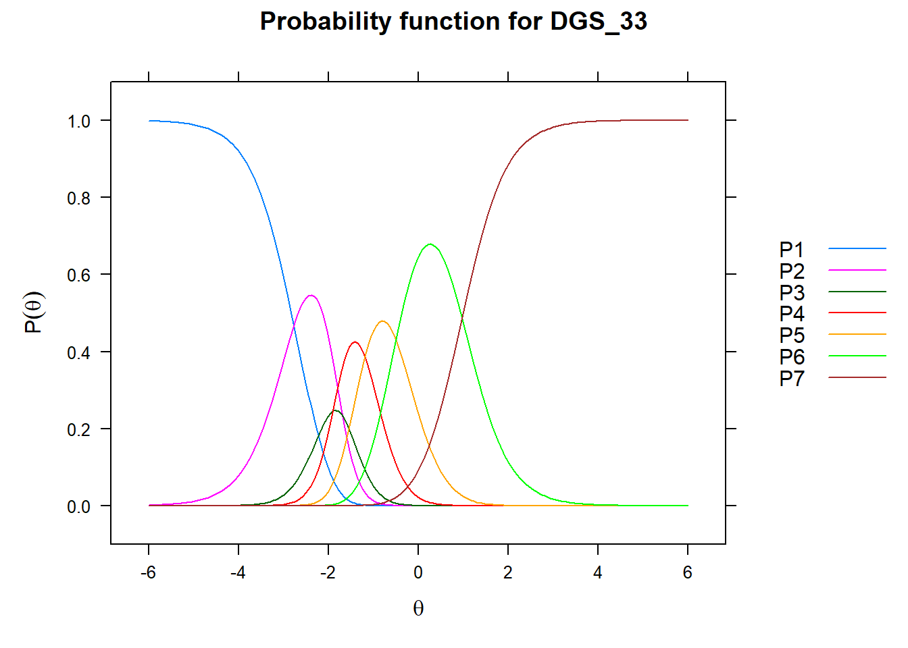
plot(DGS_IRT6_1, type = "trace")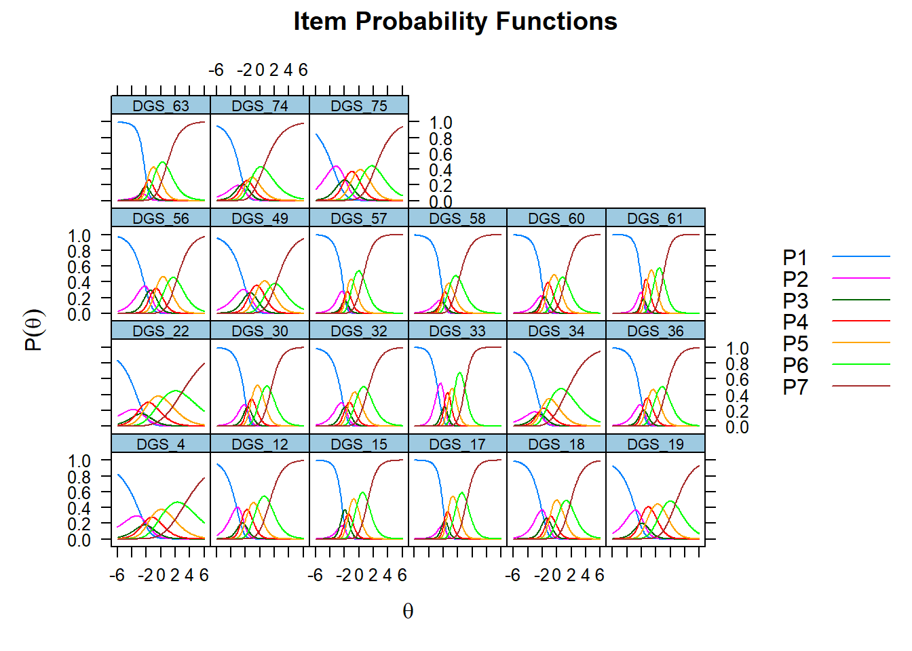
plot(DGS_IRT6_1, type = "info")plot(DGS_IRT6_1) #expected score curve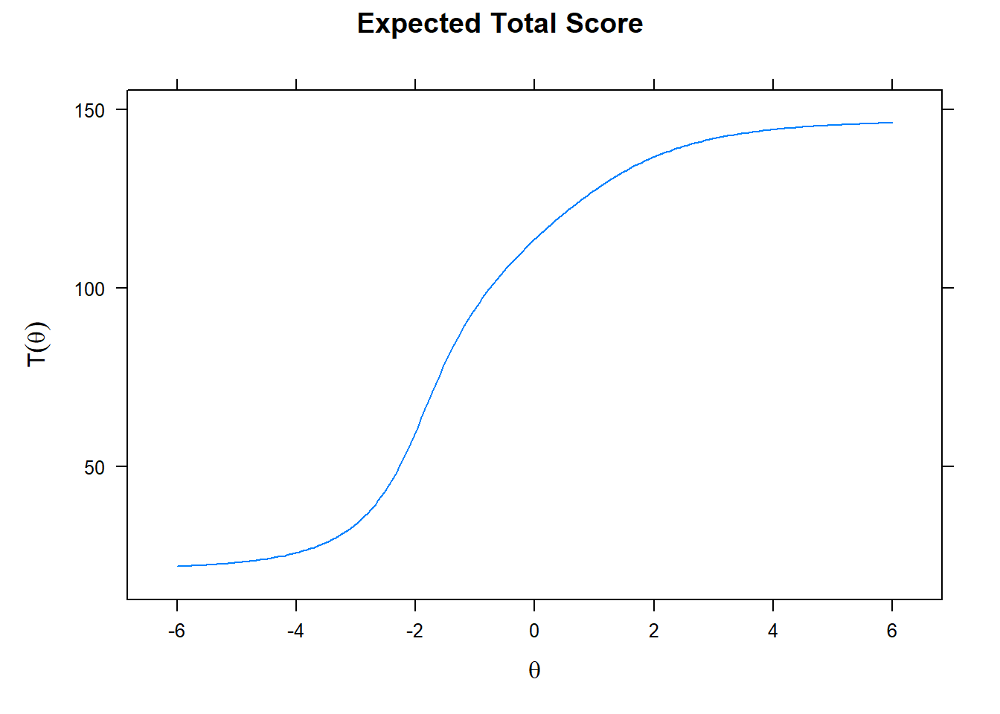
##recommend taking out 4 and 22
DGS_6model_1 <- DGS_6model_1%>%
select(!c(DGS_4,DGS_22))
DGS_IRT6_1 = mirt(data = DGS_6model_1,
model = 1, #this is for one factor
itemtype = "gpcmIRT" #generalized partial credit model
)##
Iteration: 1, Log-Lik: -21139.373, Max-Change: 1.73509
Iteration: 2, Log-Lik: -20668.315, Max-Change: 0.77445
Iteration: 3, Log-Lik: -20603.289, Max-Change: 0.44093
Iteration: 4, Log-Lik: -20570.812, Max-Change: 0.34945
Iteration: 5, Log-Lik: -20553.609, Max-Change: 0.39034
Iteration: 6, Log-Lik: -20540.814, Max-Change: 0.27622
Iteration: 7, Log-Lik: -20530.936, Max-Change: 0.12687
Iteration: 8, Log-Lik: -20525.088, Max-Change: 0.15399
Iteration: 9, Log-Lik: -20519.611, Max-Change: 0.08055
Iteration: 10, Log-Lik: -20515.963, Max-Change: 0.11490
Iteration: 11, Log-Lik: -20512.538, Max-Change: 0.12543
Iteration: 12, Log-Lik: -20509.550, Max-Change: 0.09240
Iteration: 13, Log-Lik: -20507.699, Max-Change: 0.09079
Iteration: 14, Log-Lik: -20505.919, Max-Change: 0.04284
Iteration: 15, Log-Lik: -20504.953, Max-Change: 0.07823
Iteration: 16, Log-Lik: -20503.377, Max-Change: 0.04378
Iteration: 17, Log-Lik: -20502.494, Max-Change: 0.03964
Iteration: 18, Log-Lik: -20502.023, Max-Change: 0.01778
Iteration: 19, Log-Lik: -20501.641, Max-Change: 0.03020
Iteration: 20, Log-Lik: -20501.281, Max-Change: 0.02057
Iteration: 21, Log-Lik: -20500.963, Max-Change: 0.01388
Iteration: 22, Log-Lik: -20500.088, Max-Change: 0.02433
Iteration: 23, Log-Lik: -20499.937, Max-Change: 0.00743
Iteration: 24, Log-Lik: -20499.806, Max-Change: 0.01074
Iteration: 25, Log-Lik: -20499.575, Max-Change: 0.00815
Iteration: 26, Log-Lik: -20499.475, Max-Change: 0.00506
Iteration: 27, Log-Lik: -20499.394, Max-Change: 0.00759
Iteration: 28, Log-Lik: -20499.170, Max-Change: 0.00524
Iteration: 29, Log-Lik: -20499.105, Max-Change: 0.00355
Iteration: 30, Log-Lik: -20499.054, Max-Change: 0.00342
Iteration: 31, Log-Lik: -20498.904, Max-Change: 0.00870
Iteration: 32, Log-Lik: -20498.858, Max-Change: 0.00288
Iteration: 33, Log-Lik: -20498.828, Max-Change: 0.00230
Iteration: 34, Log-Lik: -20498.748, Max-Change: 0.00302
Iteration: 35, Log-Lik: -20498.727, Max-Change: 0.00309
Iteration: 36, Log-Lik: -20498.706, Max-Change: 0.00177
Iteration: 37, Log-Lik: -20498.679, Max-Change: 0.00122
Iteration: 38, Log-Lik: -20498.669, Max-Change: 0.00257
Iteration: 39, Log-Lik: -20498.654, Max-Change: 0.00194
Iteration: 40, Log-Lik: -20498.629, Max-Change: 0.00132
Iteration: 41, Log-Lik: -20498.621, Max-Change: 0.00120
Iteration: 42, Log-Lik: -20498.616, Max-Change: 0.00122
Iteration: 43, Log-Lik: -20498.611, Max-Change: 0.00103
Iteration: 44, Log-Lik: -20498.604, Max-Change: 0.00110
Iteration: 45, Log-Lik: -20498.600, Max-Change: 0.00109
Iteration: 46, Log-Lik: -20498.591, Max-Change: 0.00106
Iteration: 47, Log-Lik: -20498.584, Max-Change: 0.00185
Iteration: 48, Log-Lik: -20498.579, Max-Change: 0.00112
Iteration: 49, Log-Lik: -20498.575, Max-Change: 0.00180
Iteration: 50, Log-Lik: -20498.569, Max-Change: 0.00087
Iteration: 51, Log-Lik: -20498.565, Max-Change: 0.00070
Iteration: 52, Log-Lik: -20498.562, Max-Change: 0.00106
Iteration: 53, Log-Lik: -20498.558, Max-Change: 0.00175
Iteration: 54, Log-Lik: -20498.554, Max-Change: 0.00079
Iteration: 55, Log-Lik: -20498.553, Max-Change: 0.00066
Iteration: 56, Log-Lik: -20498.551, Max-Change: 0.00076
Iteration: 57, Log-Lik: -20498.549, Max-Change: 0.00098
Iteration: 58, Log-Lik: -20498.548, Max-Change: 0.00051
Iteration: 59, Log-Lik: -20498.546, Max-Change: 0.00048
Iteration: 60, Log-Lik: -20498.545, Max-Change: 0.00108
Iteration: 61, Log-Lik: -20498.540, Max-Change: 0.00056
Iteration: 62, Log-Lik: -20498.539, Max-Change: 0.00037
Iteration: 63, Log-Lik: -20498.538, Max-Change: 0.00063
Iteration: 64, Log-Lik: -20498.534, Max-Change: 0.00088
Iteration: 65, Log-Lik: -20498.532, Max-Change: 0.00050
Iteration: 66, Log-Lik: -20498.531, Max-Change: 0.00049
Iteration: 67, Log-Lik: -20498.531, Max-Change: 0.00098
Iteration: 68, Log-Lik: -20498.529, Max-Change: 0.00065
Iteration: 69, Log-Lik: -20498.528, Max-Change: 0.00030
Iteration: 70, Log-Lik: -20498.528, Max-Change: 0.00039
Iteration: 71, Log-Lik: -20498.527, Max-Change: 0.00036
Iteration: 72, Log-Lik: -20498.527, Max-Change: 0.00113
Iteration: 73, Log-Lik: -20498.526, Max-Change: 0.00073
Iteration: 74, Log-Lik: -20498.525, Max-Change: 0.00072
Iteration: 75, Log-Lik: -20498.525, Max-Change: 0.00043
Iteration: 76, Log-Lik: -20498.524, Max-Change: 0.00038
Iteration: 77, Log-Lik: -20498.524, Max-Change: 0.00047
Iteration: 78, Log-Lik: -20498.524, Max-Change: 0.00029
Iteration: 79, Log-Lik: -20498.523, Max-Change: 0.00053
Iteration: 80, Log-Lik: -20498.523, Max-Change: 0.00033
Iteration: 81, Log-Lik: -20498.523, Max-Change: 0.00020
Iteration: 82, Log-Lik: -20498.522, Max-Change: 0.00036
Iteration: 83, Log-Lik: -20498.522, Max-Change: 0.00053
Iteration: 84, Log-Lik: -20498.522, Max-Change: 0.00031
Iteration: 85, Log-Lik: -20498.522, Max-Change: 0.00057
Iteration: 86, Log-Lik: -20498.521, Max-Change: 0.00037
Iteration: 87, Log-Lik: -20498.521, Max-Change: 0.00022
Iteration: 88, Log-Lik: -20498.521, Max-Change: 0.00033
Iteration: 89, Log-Lik: -20498.520, Max-Change: 0.00028
Iteration: 90, Log-Lik: -20498.520, Max-Change: 0.00079
Iteration: 91, Log-Lik: -20498.520, Max-Change: 0.00129
Iteration: 92, Log-Lik: -20498.520, Max-Change: 0.00076
Iteration: 93, Log-Lik: -20498.520, Max-Change: 0.00046
Iteration: 94, Log-Lik: -20498.520, Max-Change: 0.00060
Iteration: 95, Log-Lik: -20498.519, Max-Change: 0.00078
Iteration: 96, Log-Lik: -20498.519, Max-Change: 0.00048
Iteration: 97, Log-Lik: -20498.519, Max-Change: 0.00066
Iteration: 98, Log-Lik: -20498.519, Max-Change: 0.00086
Iteration: 99, Log-Lik: -20498.519, Max-Change: 0.00052
Iteration: 100, Log-Lik: -20498.519, Max-Change: 0.00080
Iteration: 101, Log-Lik: -20498.519, Max-Change: 0.00106
Iteration: 102, Log-Lik: -20498.518, Max-Change: 0.00064
Iteration: 103, Log-Lik: -20498.518, Max-Change: 0.00022
Iteration: 104, Log-Lik: -20498.518, Max-Change: 0.00059
Iteration: 105, Log-Lik: -20498.518, Max-Change: 0.00089
Iteration: 106, Log-Lik: -20498.518, Max-Change: 0.00022
Iteration: 107, Log-Lik: -20498.518, Max-Change: 0.00061
Iteration: 108, Log-Lik: -20498.518, Max-Change: 0.00090
Iteration: 109, Log-Lik: -20498.517, Max-Change: 0.00022
Iteration: 110, Log-Lik: -20498.517, Max-Change: 0.00059
Iteration: 111, Log-Lik: -20498.517, Max-Change: 0.00087
Iteration: 112, Log-Lik: -20498.517, Max-Change: 0.00021
Iteration: 113, Log-Lik: -20498.517, Max-Change: 0.00057
Iteration: 114, Log-Lik: -20498.517, Max-Change: 0.00085
Iteration: 115, Log-Lik: -20498.517, Max-Change: 0.00020
Iteration: 116, Log-Lik: -20498.517, Max-Change: 0.00055
Iteration: 117, Log-Lik: -20498.517, Max-Change: 0.00082
Iteration: 118, Log-Lik: -20498.516, Max-Change: 0.00020
Iteration: 119, Log-Lik: -20498.516, Max-Change: 0.00053
Iteration: 120, Log-Lik: -20498.516, Max-Change: 0.00079
Iteration: 121, Log-Lik: -20498.516, Max-Change: 0.00019
Iteration: 122, Log-Lik: -20498.516, Max-Change: 0.00052
Iteration: 123, Log-Lik: -20498.516, Max-Change: 0.00077
Iteration: 124, Log-Lik: -20498.516, Max-Change: 0.00019
Iteration: 125, Log-Lik: -20498.516, Max-Change: 0.00050
Iteration: 126, Log-Lik: -20498.516, Max-Change: 0.00075
Iteration: 127, Log-Lik: -20498.516, Max-Change: 0.00018
Iteration: 128, Log-Lik: -20498.516, Max-Change: 0.00048
Iteration: 129, Log-Lik: -20498.515, Max-Change: 0.00073
Iteration: 130, Log-Lik: -20498.515, Max-Change: 0.00018
Iteration: 131, Log-Lik: -20498.515, Max-Change: 0.00047
Iteration: 132, Log-Lik: -20498.515, Max-Change: 0.00070
Iteration: 133, Log-Lik: -20498.515, Max-Change: 0.00017
Iteration: 134, Log-Lik: -20498.515, Max-Change: 0.00046
Iteration: 135, Log-Lik: -20498.515, Max-Change: 0.00068
Iteration: 136, Log-Lik: -20498.515, Max-Change: 0.00017
Iteration: 137, Log-Lik: -20498.515, Max-Change: 0.00044
Iteration: 138, Log-Lik: -20498.515, Max-Change: 0.00066
Iteration: 139, Log-Lik: -20498.515, Max-Change: 0.00016
Iteration: 140, Log-Lik: -20498.515, Max-Change: 0.00043
Iteration: 141, Log-Lik: -20498.515, Max-Change: 0.00065
Iteration: 142, Log-Lik: -20498.515, Max-Change: 0.00016
Iteration: 143, Log-Lik: -20498.514, Max-Change: 0.00042
Iteration: 144, Log-Lik: -20498.514, Max-Change: 0.00063
Iteration: 145, Log-Lik: -20498.514, Max-Change: 0.00015
Iteration: 146, Log-Lik: -20498.514, Max-Change: 0.00041
Iteration: 147, Log-Lik: -20498.514, Max-Change: 0.00061
Iteration: 148, Log-Lik: -20498.514, Max-Change: 0.00015
Iteration: 149, Log-Lik: -20498.514, Max-Change: 0.00040
Iteration: 150, Log-Lik: -20498.514, Max-Change: 0.00059
Iteration: 151, Log-Lik: -20498.514, Max-Change: 0.00014
Iteration: 152, Log-Lik: -20498.514, Max-Change: 0.00038
Iteration: 153, Log-Lik: -20498.514, Max-Change: 0.00058
Iteration: 154, Log-Lik: -20498.514, Max-Change: 0.00014
Iteration: 155, Log-Lik: -20498.514, Max-Change: 0.00037
Iteration: 156, Log-Lik: -20498.514, Max-Change: 0.00056
Iteration: 157, Log-Lik: -20498.514, Max-Change: 0.00014
Iteration: 158, Log-Lik: -20498.514, Max-Change: 0.00036
Iteration: 159, Log-Lik: -20498.514, Max-Change: 0.00055
Iteration: 160, Log-Lik: -20498.514, Max-Change: 0.00013
Iteration: 161, Log-Lik: -20498.514, Max-Change: 0.00035
Iteration: 162, Log-Lik: -20498.513, Max-Change: 0.00053
Iteration: 163, Log-Lik: -20498.513, Max-Change: 0.00013
Iteration: 164, Log-Lik: -20498.513, Max-Change: 0.00034
Iteration: 165, Log-Lik: -20498.513, Max-Change: 0.00052
Iteration: 166, Log-Lik: -20498.513, Max-Change: 0.00013
Iteration: 167, Log-Lik: -20498.513, Max-Change: 0.00033
Iteration: 168, Log-Lik: -20498.513, Max-Change: 0.00050
Iteration: 169, Log-Lik: -20498.513, Max-Change: 0.00012
Iteration: 170, Log-Lik: -20498.513, Max-Change: 0.00033
Iteration: 171, Log-Lik: -20498.513, Max-Change: 0.00049
Iteration: 172, Log-Lik: -20498.513, Max-Change: 0.00012
Iteration: 173, Log-Lik: -20498.513, Max-Change: 0.00032
Iteration: 174, Log-Lik: -20498.513, Max-Change: 0.00048
Iteration: 175, Log-Lik: -20498.513, Max-Change: 0.00012
Iteration: 176, Log-Lik: -20498.513, Max-Change: 0.00031
Iteration: 177, Log-Lik: -20498.513, Max-Change: 0.00046
Iteration: 178, Log-Lik: -20498.513, Max-Change: 0.00011
Iteration: 179, Log-Lik: -20498.513, Max-Change: 0.00030
Iteration: 180, Log-Lik: -20498.513, Max-Change: 0.00045
Iteration: 181, Log-Lik: -20498.513, Max-Change: 0.00011
Iteration: 182, Log-Lik: -20498.513, Max-Change: 0.00029
Iteration: 183, Log-Lik: -20498.513, Max-Change: 0.00044
Iteration: 184, Log-Lik: -20498.513, Max-Change: 0.00011
Iteration: 185, Log-Lik: -20498.513, Max-Change: 0.00029
Iteration: 186, Log-Lik: -20498.513, Max-Change: 0.00043
Iteration: 187, Log-Lik: -20498.513, Max-Change: 0.00010
Iteration: 188, Log-Lik: -20498.513, Max-Change: 0.00028
Iteration: 189, Log-Lik: -20498.513, Max-Change: 0.00042
Iteration: 190, Log-Lik: -20498.512, Max-Change: 0.00010
Iteration: 191, Log-Lik: -20498.512, Max-Change: 0.00027
Iteration: 192, Log-Lik: -20498.512, Max-Change: 0.00040
Iteration: 193, Log-Lik: -20498.512, Max-Change: 0.00010summary(DGS_IRT6_1)## F1 h2
## DGS_12 0.522 0.273
## DGS_15 0.666 0.444
## DGS_17 0.673 0.453
## DGS_18 0.556 0.309
## DGS_19 0.412 0.170
## DGS_30 0.615 0.378
## DGS_32 0.540 0.292
## DGS_33 0.764 0.583
## DGS_34 0.343 0.118
## DGS_36 0.577 0.333
## DGS_56 0.486 0.236
## DGS_49 0.407 0.166
## DGS_57 0.637 0.405
## DGS_58 0.560 0.314
## DGS_60 0.590 0.348
## DGS_61 0.742 0.551
## DGS_63 0.511 0.261
## DGS_74 0.390 0.152
## DGS_75 0.385 0.148
##
## SS loadings: 5.933
## Proportion Var: 0.312
##
## Factor correlations:
##
## F1
## F1 1plot(DGS_IRT6_1, type = "trace")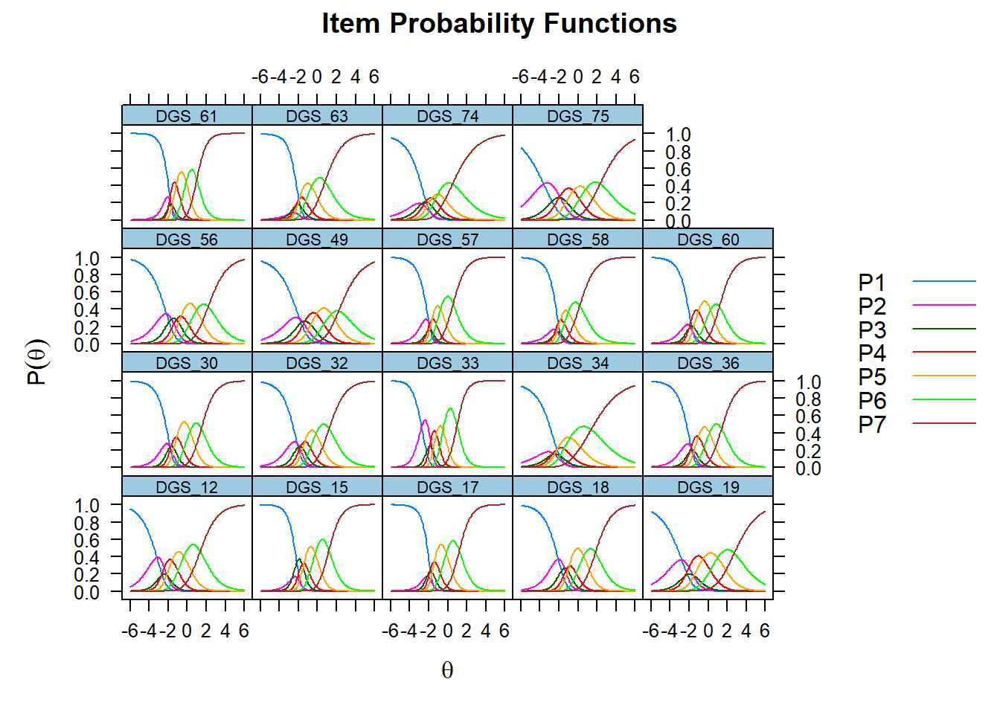
#traces suggest that 2-4 options were not commonly used
plot(DGS_IRT6_1, type = "info")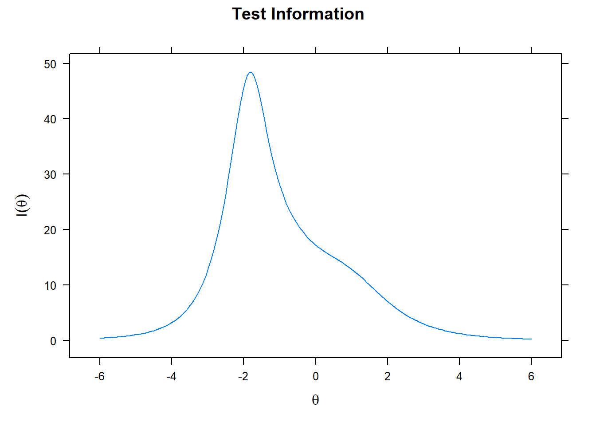
#item information suggests that we need to improve the ability to identify people on top of the altruism scores.
#person fit
#fscores(DGS_IRT6_1) #factor score for each participants
#mirt::itemfit(DGS_IRT6_1)
#mirt::personfit(DGS_IRT6_1)DGS_IRT6_2 = mirt(data = DGS_6model_2,
model = 1, #this is for one factor
itemtype = "gpcmIRT" #generalized partial credit model
)##
Iteration: 1, Log-Lik: -8391.304, Max-Change: 1.84640
Iteration: 2, Log-Lik: -8072.300, Max-Change: 0.76907
Iteration: 3, Log-Lik: -8022.504, Max-Change: 0.29799
Iteration: 4, Log-Lik: -8005.922, Max-Change: 0.30569
Iteration: 5, Log-Lik: -7996.251, Max-Change: 0.22663
Iteration: 6, Log-Lik: -7991.625, Max-Change: 0.16414
Iteration: 7, Log-Lik: -7988.848, Max-Change: 0.11129
Iteration: 8, Log-Lik: -7986.817, Max-Change: 0.07437
Iteration: 9, Log-Lik: -7985.287, Max-Change: 0.07140
Iteration: 10, Log-Lik: -7983.986, Max-Change: 0.05569
Iteration: 11, Log-Lik: -7983.275, Max-Change: 0.18197
Iteration: 12, Log-Lik: -7982.719, Max-Change: 0.05247
Iteration: 13, Log-Lik: -7982.447, Max-Change: 0.04651
Iteration: 14, Log-Lik: -7982.115, Max-Change: 0.02321
Iteration: 15, Log-Lik: -7981.853, Max-Change: 0.01779
Iteration: 16, Log-Lik: -7981.335, Max-Change: 0.02369
Iteration: 17, Log-Lik: -7981.214, Max-Change: 0.01299
Iteration: 18, Log-Lik: -7981.122, Max-Change: 0.00936
Iteration: 19, Log-Lik: -7980.922, Max-Change: 0.00570
Iteration: 20, Log-Lik: -7980.878, Max-Change: 0.00910
Iteration: 21, Log-Lik: -7980.841, Max-Change: 0.00496
Iteration: 22, Log-Lik: -7980.807, Max-Change: 0.00246
Iteration: 23, Log-Lik: -7980.785, Max-Change: 0.00261
Iteration: 24, Log-Lik: -7980.766, Max-Change: 0.00247
Iteration: 25, Log-Lik: -7980.722, Max-Change: 0.02000
Iteration: 26, Log-Lik: -7980.696, Max-Change: 0.00207
Iteration: 27, Log-Lik: -7980.690, Max-Change: 0.00105
Iteration: 28, Log-Lik: -7980.687, Max-Change: 0.00141
Iteration: 29, Log-Lik: -7980.683, Max-Change: 0.00095
Iteration: 30, Log-Lik: -7980.680, Max-Change: 0.00297
Iteration: 31, Log-Lik: -7980.677, Max-Change: 0.00143
Iteration: 32, Log-Lik: -7980.675, Max-Change: 0.00097
Iteration: 33, Log-Lik: -7980.672, Max-Change: 0.00075
Iteration: 34, Log-Lik: -7980.672, Max-Change: 0.00058
Iteration: 35, Log-Lik: -7980.671, Max-Change: 0.00045
Iteration: 36, Log-Lik: -7980.670, Max-Change: 0.00138
Iteration: 37, Log-Lik: -7980.667, Max-Change: 0.00089
Iteration: 38, Log-Lik: -7980.666, Max-Change: 0.00041
Iteration: 39, Log-Lik: -7980.666, Max-Change: 0.00034
Iteration: 40, Log-Lik: -7980.665, Max-Change: 0.00102
Iteration: 41, Log-Lik: -7980.664, Max-Change: 0.00040
Iteration: 42, Log-Lik: -7980.664, Max-Change: 0.00029
Iteration: 43, Log-Lik: -7980.664, Max-Change: 0.00011
Iteration: 44, Log-Lik: -7980.663, Max-Change: 0.00009summary(DGS_IRT6_2)## F1 h2
## DGS_5 0.476 0.2264
## DGS_10 0.856 0.7322
## DGS_26 0.630 0.3974
## DGS_41 0.556 0.3089
## DGS_54 0.293 0.0859
## DGS_69 0.616 0.3791
## DGS_72 0.322 0.1037
##
## SS loadings: 2.234
## Proportion Var: 0.319
##
## Factor correlations:
##
## F1
## F1 1coef(DGS_IRT6_2, IRTpars = T)## $DGS_5
## a1 b1 b2 b3 b4 b5 b6 c
## par 0.921 -2.855 -2.133 -1.149 -1.27 -0.021 1.061 0
##
## $DGS_10
## a1 b1 b2 b3 b4 b5 b6 c
## par 2.814 -2.59 -1.747 -1.377 -1.18 -0.679 0.198 0
##
## $DGS_26
## a1 b1 b2 b3 b4 b5 b6 c
## par 1.382 -3.358 -2.157 -1.598 -1.293 -0.544 0.701 0
##
## $DGS_41
## a1 b1 b2 b3 b4 b5 b6 c
## par 1.138 -2.56 -2.397 -0.91 -1.235 -0.426 0.521 0
##
## $DGS_54
## a1 b1 b2 b3 b4 b5 b6 c
## par 0.522 -4.09 -2.305 -2.635 -1.918 -1.889 -0.568 0
##
## $DGS_69
## a1 b1 b2 b3 b4 b5 b6 c
## par 1.33 -2.23 -2.252 -1.519 -1.215 -0.892 0.28 0
##
## $DGS_72
## a1 b1 b2 b3 b4 b5 b6 c
## par 0.579 -3.517 -2.653 -1.304 -0.225 -0.784 0.895 0
##
## $GroupPars
## MEAN_1 COV_11
## par 0 1plot(DGS_IRT6_2, type = "trace")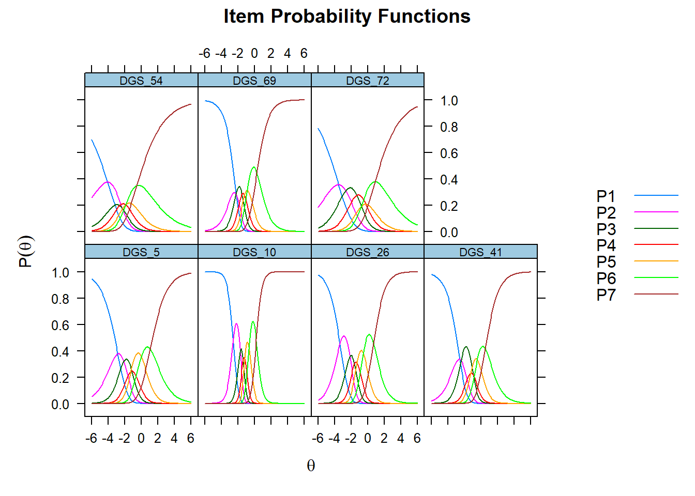
plot(DGS_IRT6_2, type = "info")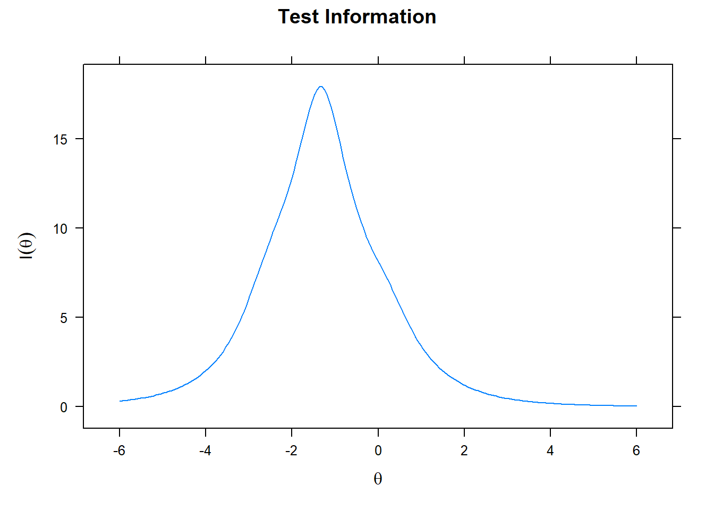
plot(DGS_IRT6_2) #expected score curve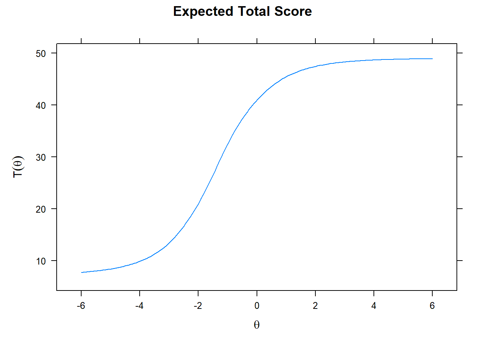
#person fit
#fscores(DGS_IRT6_2) #factor score for each participants
#mirt::itemfit(DGS_IRT6_2)
#mirt::personfit(DGS_IRT6_2)DGS_IRT6_3 = mirt(data = DGS_6model_3,
model = 1, #this is for one factor
itemtype = "gpcmIRT" #generalized partial credit model
)##
Iteration: 1, Log-Lik: -8323.288, Max-Change: 1.31215
Iteration: 2, Log-Lik: -7999.344, Max-Change: 0.75880
Iteration: 3, Log-Lik: -7962.885, Max-Change: 0.47494
Iteration: 4, Log-Lik: -7949.412, Max-Change: 0.20198
Iteration: 5, Log-Lik: -7942.846, Max-Change: 0.19615
Iteration: 6, Log-Lik: -7939.643, Max-Change: 0.08769
Iteration: 7, Log-Lik: -7938.175, Max-Change: 0.06351
Iteration: 8, Log-Lik: -7936.750, Max-Change: 0.03348
Iteration: 9, Log-Lik: -7936.107, Max-Change: 0.03041
Iteration: 10, Log-Lik: -7935.563, Max-Change: 0.02573
Iteration: 11, Log-Lik: -7935.358, Max-Change: 0.01634
Iteration: 12, Log-Lik: -7935.227, Max-Change: 0.01107
Iteration: 13, Log-Lik: -7935.025, Max-Change: 0.00549
Iteration: 14, Log-Lik: -7934.999, Max-Change: 0.00332
Iteration: 15, Log-Lik: -7934.979, Max-Change: 0.00248
Iteration: 16, Log-Lik: -7934.921, Max-Change: 0.00550
Iteration: 17, Log-Lik: -7934.918, Max-Change: 0.00086
Iteration: 18, Log-Lik: -7934.917, Max-Change: 0.00055
Iteration: 19, Log-Lik: -7934.914, Max-Change: 0.00087
Iteration: 20, Log-Lik: -7934.913, Max-Change: 0.00079
Iteration: 21, Log-Lik: -7934.912, Max-Change: 0.00068
Iteration: 22, Log-Lik: -7934.912, Max-Change: 0.00029
Iteration: 23, Log-Lik: -7934.912, Max-Change: 0.00025
Iteration: 24, Log-Lik: -7934.911, Max-Change: 0.00026
Iteration: 25, Log-Lik: -7934.911, Max-Change: 0.00018
Iteration: 26, Log-Lik: -7934.911, Max-Change: 0.00019
Iteration: 27, Log-Lik: -7934.911, Max-Change: 0.00018
Iteration: 28, Log-Lik: -7934.911, Max-Change: 0.00019
Iteration: 29, Log-Lik: -7934.911, Max-Change: 0.00019
Iteration: 30, Log-Lik: -7934.911, Max-Change: 0.00019
Iteration: 31, Log-Lik: -7934.911, Max-Change: 0.00016
Iteration: 32, Log-Lik: -7934.911, Max-Change: 0.00016
Iteration: 33, Log-Lik: -7934.911, Max-Change: 0.00016
Iteration: 34, Log-Lik: -7934.911, Max-Change: 0.00016
Iteration: 35, Log-Lik: -7934.911, Max-Change: 0.00015
Iteration: 36, Log-Lik: -7934.911, Max-Change: 0.00015
Iteration: 37, Log-Lik: -7934.911, Max-Change: 0.00014
Iteration: 38, Log-Lik: -7934.911, Max-Change: 0.00014
Iteration: 39, Log-Lik: -7934.911, Max-Change: 0.00013
Iteration: 40, Log-Lik: -7934.911, Max-Change: 0.00013
Iteration: 41, Log-Lik: -7934.911, Max-Change: 0.00013
Iteration: 42, Log-Lik: -7934.911, Max-Change: 0.00013
Iteration: 43, Log-Lik: -7934.910, Max-Change: 0.00012
Iteration: 44, Log-Lik: -7934.910, Max-Change: 0.00012
Iteration: 45, Log-Lik: -7934.910, Max-Change: 0.00011
Iteration: 46, Log-Lik: -7934.910, Max-Change: 0.00011
Iteration: 47, Log-Lik: -7934.910, Max-Change: 0.00011
Iteration: 48, Log-Lik: -7934.910, Max-Change: 0.00011
Iteration: 49, Log-Lik: -7934.910, Max-Change: 0.00010
Iteration: 50, Log-Lik: -7934.910, Max-Change: 0.00010
Iteration: 51, Log-Lik: -7934.910, Max-Change: 0.00010summary(DGS_IRT6_3)## F1 h2
## DGS_9 0.405 0.1637
## DGS_20 0.230 0.0531
## DGS_27 0.531 0.2825
## DGS_29 0.674 0.4540
## DGS_46 0.527 0.2775
## DGS_52 0.581 0.3377
##
## SS loadings: 1.569
## Proportion Var: 0.261
##
## Factor correlations:
##
## F1
## F1 1coef(DGS_IRT6_3, IRTpars = T)## $DGS_9
## a1 b1 b2 b3 b4 b5 b6 c
## par 0.753 -2.382 -2.025 -1.179 -1.398 -0.442 1.156 0
##
## $DGS_20
## a1 b1 b2 b3 b4 b5 b6 c
## par 0.403 -2.547 -0.01 0.317 -0.399 2 3.951 0
##
## $DGS_27
## a1 b1 b2 b3 b4 b5 b6 c
## par 1.068 -1.421 -1.725 -1.061 -0.763 0.77 1.896 0
##
## $DGS_29
## a1 b1 b2 b3 b4 b5 b6 c
## par 1.552 -1.467 -0.744 -0.742 -0.222 0.613 1.399 0
##
## $DGS_46
## a1 b1 b2 b3 b4 b5 b6 c
## par 1.055 -2.307 -1.677 -1.749 -1.329 -0.007 0.855 0
##
## $DGS_52
## a1 b1 b2 b3 b4 b5 b6 c
## par 1.215 -1.556 -0.799 -0.76 -0.005 0.827 1.97 0
##
## $GroupPars
## MEAN_1 COV_11
## par 0 1plot(DGS_IRT6_3, type = "trace")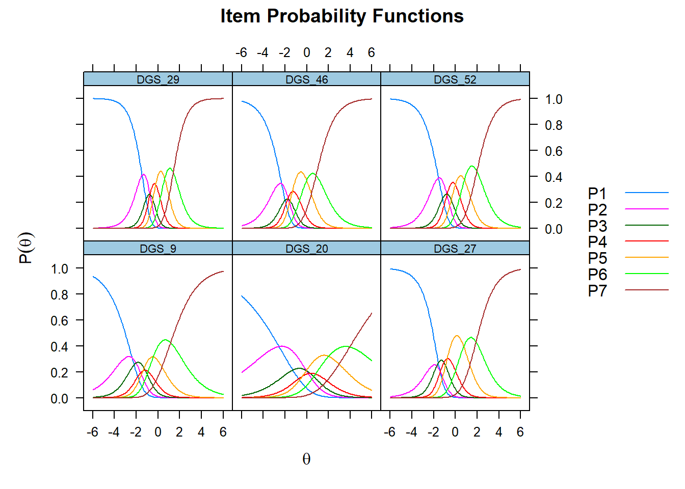
plot(DGS_IRT6_3, type = "info")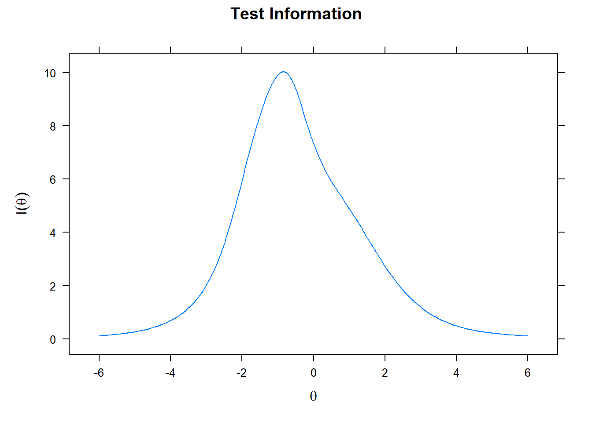
plot(DGS_IRT6_3) #expected score curve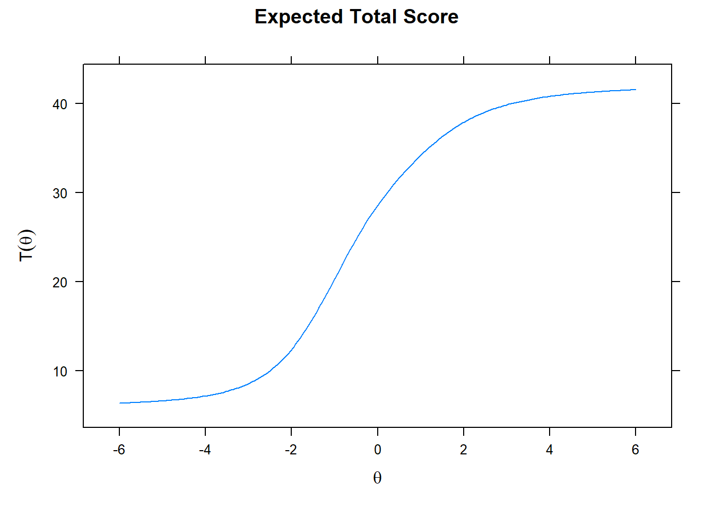
# suggest remove 20
DGS_6model_3 <- DGS_6model_3%>%
select(!c(DGS_20))
DGS_IRT6_3 = mirt(data = DGS_6model_3,
model = 1, #this is for one factor
itemtype = "gpcmIRT" #generalized partial credit model
)##
Iteration: 1, Log-Lik: -6733.518, Max-Change: 1.24834
Iteration: 2, Log-Lik: -6552.163, Max-Change: 0.43833
Iteration: 3, Log-Lik: -6522.586, Max-Change: 0.32559
Iteration: 4, Log-Lik: -6506.744, Max-Change: 0.22549
Iteration: 5, Log-Lik: -6499.765, Max-Change: 0.22978
Iteration: 6, Log-Lik: -6496.586, Max-Change: 0.08364
Iteration: 7, Log-Lik: -6495.423, Max-Change: 0.09061
Iteration: 8, Log-Lik: -6494.367, Max-Change: 0.05023
Iteration: 9, Log-Lik: -6493.620, Max-Change: 0.03620
Iteration: 10, Log-Lik: -6493.281, Max-Change: 0.03036
Iteration: 11, Log-Lik: -6492.993, Max-Change: 0.01575
Iteration: 12, Log-Lik: -6492.812, Max-Change: 0.01300
Iteration: 13, Log-Lik: -6492.528, Max-Change: 0.00822
Iteration: 14, Log-Lik: -6492.491, Max-Change: 0.00842
Iteration: 15, Log-Lik: -6492.465, Max-Change: 0.00631
Iteration: 16, Log-Lik: -6492.444, Max-Change: 0.00512
Iteration: 17, Log-Lik: -6492.428, Max-Change: 0.00204
Iteration: 18, Log-Lik: -6492.417, Max-Change: 0.00175
Iteration: 19, Log-Lik: -6492.383, Max-Change: 0.00070
Iteration: 20, Log-Lik: -6492.383, Max-Change: 0.00063
Iteration: 21, Log-Lik: -6492.382, Max-Change: 0.00047
Iteration: 22, Log-Lik: -6492.381, Max-Change: 0.00047
Iteration: 23, Log-Lik: -6492.381, Max-Change: 0.00031
Iteration: 24, Log-Lik: -6492.381, Max-Change: 0.00011
Iteration: 25, Log-Lik: -6492.381, Max-Change: 0.00032
Iteration: 26, Log-Lik: -6492.380, Max-Change: 0.00027
Iteration: 27, Log-Lik: -6492.380, Max-Change: 0.00027
Iteration: 28, Log-Lik: -6492.380, Max-Change: 0.00016
Iteration: 29, Log-Lik: -6492.380, Max-Change: 0.00029
Iteration: 30, Log-Lik: -6492.380, Max-Change: 0.00010
Iteration: 31, Log-Lik: -6492.380, Max-Change: 0.00008summary(DGS_IRT6_3)## F1 h2
## DGS_9 0.435 0.190
## DGS_27 0.532 0.283
## DGS_29 0.674 0.454
## DGS_46 0.529 0.280
## DGS_52 0.557 0.310
##
## SS loadings: 1.517
## Proportion Var: 0.303
##
## Factor correlations:
##
## F1
## F1 1#person fit
#fscores(DGS_IRT6_3) #factor score for each participants
#mirt::itemfit(DGS_IRT6_3)
#mirt::personfit(DGS_IRT6_3)DGS_IRT6_4 = mirt(data = DGS_6model_4,
model = 1, #this is for one factor
itemtype = "gpcmIRT" #generalized partial credit model
)##
Iteration: 1, Log-Lik: -8919.126, Max-Change: 1.07105
Iteration: 2, Log-Lik: -8459.296, Max-Change: 0.73058
Iteration: 3, Log-Lik: -8420.051, Max-Change: 0.37899
Iteration: 4, Log-Lik: -8399.352, Max-Change: 0.28636
Iteration: 5, Log-Lik: -8387.904, Max-Change: 0.25000
Iteration: 6, Log-Lik: -8380.450, Max-Change: 0.17523
Iteration: 7, Log-Lik: -8376.266, Max-Change: 0.15723
Iteration: 8, Log-Lik: -8373.698, Max-Change: 0.09235
Iteration: 9, Log-Lik: -8372.410, Max-Change: 0.05533
Iteration: 10, Log-Lik: -8371.954, Max-Change: 0.07857
Iteration: 11, Log-Lik: -8371.401, Max-Change: 0.05026
Iteration: 12, Log-Lik: -8371.136, Max-Change: 0.02901
Iteration: 13, Log-Lik: -8370.956, Max-Change: 0.01557
Iteration: 14, Log-Lik: -8370.902, Max-Change: 0.00840
Iteration: 15, Log-Lik: -8370.871, Max-Change: 0.00769
Iteration: 16, Log-Lik: -8370.834, Max-Change: 0.00387
Iteration: 17, Log-Lik: -8370.828, Max-Change: 0.00124
Iteration: 18, Log-Lik: -8370.824, Max-Change: 0.00184
Iteration: 19, Log-Lik: -8370.816, Max-Change: 0.00089
Iteration: 20, Log-Lik: -8370.814, Max-Change: 0.00052
Iteration: 21, Log-Lik: -8370.813, Max-Change: 0.00226
Iteration: 22, Log-Lik: -8370.811, Max-Change: 0.00093
Iteration: 23, Log-Lik: -8370.810, Max-Change: 0.00102
Iteration: 24, Log-Lik: -8370.808, Max-Change: 0.00056
Iteration: 25, Log-Lik: -8370.808, Max-Change: 0.00015
Iteration: 26, Log-Lik: -8370.808, Max-Change: 0.00045
Iteration: 27, Log-Lik: -8370.808, Max-Change: 0.00033
Iteration: 28, Log-Lik: -8370.808, Max-Change: 0.00020
Iteration: 29, Log-Lik: -8370.807, Max-Change: 0.00030
Iteration: 30, Log-Lik: -8370.807, Max-Change: 0.00018
Iteration: 31, Log-Lik: -8370.807, Max-Change: 0.00013
Iteration: 32, Log-Lik: -8370.807, Max-Change: 0.00013
Iteration: 33, Log-Lik: -8370.807, Max-Change: 0.00008summary(DGS_IRT6_4)## F1 h2
## DGS_2 0.150 0.0225
## DGS_11 0.147 0.0216
## DGS_28 0.687 0.4721
## DGS_35 0.546 0.2978
## DGS_48 0.416 0.1730
## DGS_68 0.620 0.3838
##
## SS loadings: 1.371
## Proportion Var: 0.228
##
## Factor correlations:
##
## F1
## F1 1coef(DGS_IRT6_4, IRTpars = T)## $DGS_2
## a1 b1 b2 b3 b4 b5 b6 c
## par 0.258 -5.632 -1.078 1.114 0.099 1.378 3.394 0
##
## $DGS_11
## a1 b1 b2 b3 b4 b5 b6 c
## par 0.253 -3.906 -0.154 2.015 -0.168 0.736 2.488 0
##
## $DGS_28
## a1 b1 b2 b3 b4 b5 b6 c
## par 1.609 -1.015 -0.008 0.58 0.806 1.41 2.218 0
##
## $DGS_35
## a1 b1 b2 b3 b4 b5 b6 c
## par 1.108 -1.354 -0.247 0.156 0.63 1.841 2.079 0
##
## $DGS_48
## a1 b1 b2 b3 b4 b5 b6 c
## par 0.778 -1.354 -0.042 0.599 1.342 1.881 2.613 0
##
## $DGS_68
## a1 b1 b2 b3 b4 b5 b6 c
## par 1.343 -0.921 -0.088 0.564 0.588 1.578 2.048 0
##
## $GroupPars
## MEAN_1 COV_11
## par 0 1plot(DGS_IRT6_4, type = "trace")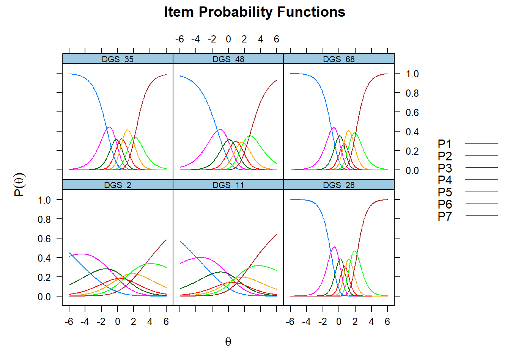
plot(DGS_IRT6_4, type = "info")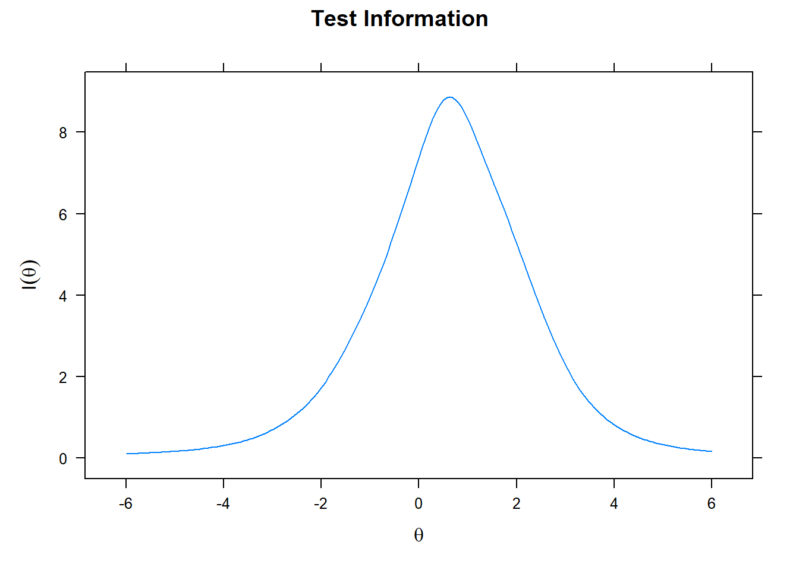
plot(DGS_IRT6_4) #expected score curve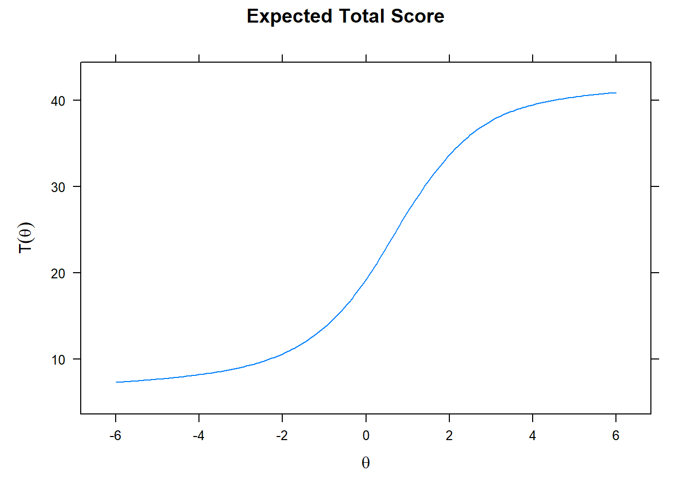
#suggest remove 2, 11 due to poor discrimination
DGS_6model_4 <- DGS_6model_4 %>%
select(!c(DGS_2,DGS_11))
DGS_IRT6_4 = mirt(data = DGS_6model_4,
model = 1, #this is for one factor
itemtype = "gpcmIRT" #generalized partial credit model
)##
Iteration: 1, Log-Lik: -5564.873, Max-Change: 0.86516
Iteration: 2, Log-Lik: -5397.684, Max-Change: 0.45647
Iteration: 3, Log-Lik: -5368.424, Max-Change: 0.26771
Iteration: 4, Log-Lik: -5351.642, Max-Change: 0.31011
Iteration: 5, Log-Lik: -5345.790, Max-Change: 0.13450
Iteration: 6, Log-Lik: -5343.051, Max-Change: 0.10728
Iteration: 7, Log-Lik: -5341.923, Max-Change: 0.05781
Iteration: 8, Log-Lik: -5341.108, Max-Change: 0.04113
Iteration: 9, Log-Lik: -5340.629, Max-Change: 0.02907
Iteration: 10, Log-Lik: -5340.305, Max-Change: 0.02023
Iteration: 11, Log-Lik: -5340.149, Max-Change: 0.01506
Iteration: 12, Log-Lik: -5340.047, Max-Change: 0.01042
Iteration: 13, Log-Lik: -5339.934, Max-Change: 0.02102
Iteration: 14, Log-Lik: -5339.898, Max-Change: 0.01226
Iteration: 15, Log-Lik: -5339.873, Max-Change: 0.00539
Iteration: 16, Log-Lik: -5339.859, Max-Change: 0.00365
Iteration: 17, Log-Lik: -5339.844, Max-Change: 0.00248
Iteration: 18, Log-Lik: -5339.833, Max-Change: 0.00208
Iteration: 19, Log-Lik: -5339.804, Max-Change: 0.00080
Iteration: 20, Log-Lik: -5339.804, Max-Change: 0.00068
Iteration: 21, Log-Lik: -5339.803, Max-Change: 0.00043
Iteration: 22, Log-Lik: -5339.802, Max-Change: 0.00026
Iteration: 23, Log-Lik: -5339.802, Max-Change: 0.00022
Iteration: 24, Log-Lik: -5339.802, Max-Change: 0.00022
Iteration: 25, Log-Lik: -5339.801, Max-Change: 0.00031
Iteration: 26, Log-Lik: -5339.801, Max-Change: 0.00017
Iteration: 27, Log-Lik: -5339.801, Max-Change: 0.00029
Iteration: 28, Log-Lik: -5339.801, Max-Change: 0.00008summary(DGS_IRT6_4)## F1 h2
## DGS_28 0.737 0.544
## DGS_35 0.560 0.314
## DGS_48 0.360 0.130
## DGS_68 0.627 0.393
##
## SS loadings: 1.38
## Proportion Var: 0.345
##
## Factor correlations:
##
## F1
## F1 1#person fit
#fscores(DGS_IRT6_4) #factor score for each participants
#mirt::itemfit(DGS_IRT6_4)
#mirt::personfit(DGS_IRT6_4)DGS_IRT6_5 = mirt(data = DGS_6model_5,
model = 1, #this is for one factor
itemtype = "gpcmIRT" #generalized partial credit model
)##
Iteration: 1, Log-Lik: -5737.681, Max-Change: 1.02110
Iteration: 2, Log-Lik: -5498.945, Max-Change: 0.55155
Iteration: 3, Log-Lik: -5467.686, Max-Change: 0.46236
Iteration: 4, Log-Lik: -5453.835, Max-Change: 0.44337
Iteration: 5, Log-Lik: -5447.043, Max-Change: 0.18020
Iteration: 6, Log-Lik: -5443.493, Max-Change: 0.17821
Iteration: 7, Log-Lik: -5442.166, Max-Change: 0.10690
Iteration: 8, Log-Lik: -5440.670, Max-Change: 0.08104
Iteration: 9, Log-Lik: -5439.844, Max-Change: 0.07260
Iteration: 10, Log-Lik: -5439.359, Max-Change: 0.05874
Iteration: 11, Log-Lik: -5439.034, Max-Change: 0.04878
Iteration: 12, Log-Lik: -5438.831, Max-Change: 0.04078
Iteration: 13, Log-Lik: -5438.433, Max-Change: 0.01341
Iteration: 14, Log-Lik: -5438.415, Max-Change: 0.01156
Iteration: 15, Log-Lik: -5438.403, Max-Change: 0.00995
Iteration: 16, Log-Lik: -5438.374, Max-Change: 0.00368
Iteration: 17, Log-Lik: -5438.373, Max-Change: 0.00163
Iteration: 18, Log-Lik: -5438.373, Max-Change: 0.00180
Iteration: 19, Log-Lik: -5438.372, Max-Change: 0.00069
Iteration: 20, Log-Lik: -5438.372, Max-Change: 0.00021
Iteration: 21, Log-Lik: -5438.371, Max-Change: 0.00102
Iteration: 22, Log-Lik: -5438.371, Max-Change: 0.00023
Iteration: 23, Log-Lik: -5438.371, Max-Change: 0.00095
Iteration: 24, Log-Lik: -5438.371, Max-Change: 0.00057
Iteration: 25, Log-Lik: -5438.371, Max-Change: 0.00024
Iteration: 26, Log-Lik: -5438.371, Max-Change: 0.00017
Iteration: 27, Log-Lik: -5438.371, Max-Change: 0.00150
Iteration: 28, Log-Lik: -5438.371, Max-Change: 0.00015
Iteration: 29, Log-Lik: -5438.371, Max-Change: 0.00073
Iteration: 30, Log-Lik: -5438.370, Max-Change: 0.00014
Iteration: 31, Log-Lik: -5438.370, Max-Change: 0.00071
Iteration: 32, Log-Lik: -5438.370, Max-Change: 0.00042
Iteration: 33, Log-Lik: -5438.370, Max-Change: 0.00017
Iteration: 34, Log-Lik: -5438.370, Max-Change: 0.00013
Iteration: 35, Log-Lik: -5438.370, Max-Change: 0.00063
Iteration: 36, Log-Lik: -5438.370, Max-Change: 0.00019
Iteration: 37, Log-Lik: -5438.370, Max-Change: 0.00012
Iteration: 38, Log-Lik: -5438.370, Max-Change: 0.00058
Iteration: 39, Log-Lik: -5438.370, Max-Change: 0.00024
Iteration: 40, Log-Lik: -5438.370, Max-Change: 0.00011
Iteration: 41, Log-Lik: -5438.370, Max-Change: 0.00053
Iteration: 42, Log-Lik: -5438.370, Max-Change: 0.00026
Iteration: 43, Log-Lik: -5438.370, Max-Change: 0.00010
Iteration: 44, Log-Lik: -5438.370, Max-Change: 0.00049
Iteration: 45, Log-Lik: -5438.370, Max-Change: 0.00026
Iteration: 46, Log-Lik: -5438.370, Max-Change: 0.00010summary(DGS_IRT6_5)## F1 h2
## DGS_1 0.261 0.0682
## DGS_21 0.823 0.6773
## DGS_44 0.500 0.2500
## DGS_65 0.538 0.2895
##
## SS loadings: 1.285
## Proportion Var: 0.321
##
## Factor correlations:
##
## F1
## F1 1coef(DGS_IRT6_5, IRTpars = T)## $DGS_1
## a1 b1 b2 b3 b4 b5 b6 c
## par 0.461 -2.509 -1.755 0.036 -0.324 0.791 2.151 0
##
## $DGS_21
## a1 b1 b2 b3 b4 b5 b6 c
## par 2.466 -1.714 -1.301 -0.561 -0.276 0.214 1.043 0
##
## $DGS_44
## a1 b1 b2 b3 b4 b5 b6 c
## par 0.983 -2.742 -2.079 -1.373 -0.967 -0.777 0.284 0
##
## $DGS_65
## a1 b1 b2 b3 b4 b5 b6 c
## par 1.086 -1.316 -1.59 0.182 -0.167 0.606 1.326 0
##
## $GroupPars
## MEAN_1 COV_11
## par 0 1plot(DGS_IRT6_5, type = "trace")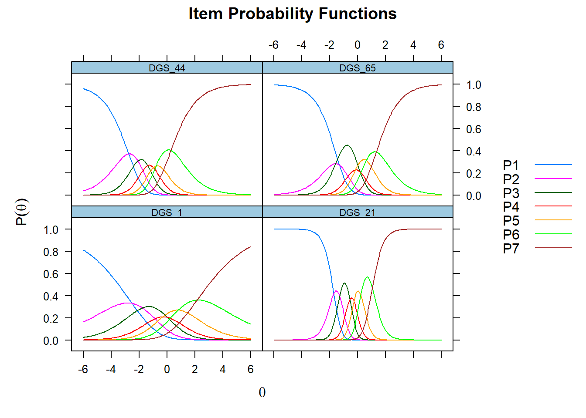
plot(DGS_IRT6_5, type = "info")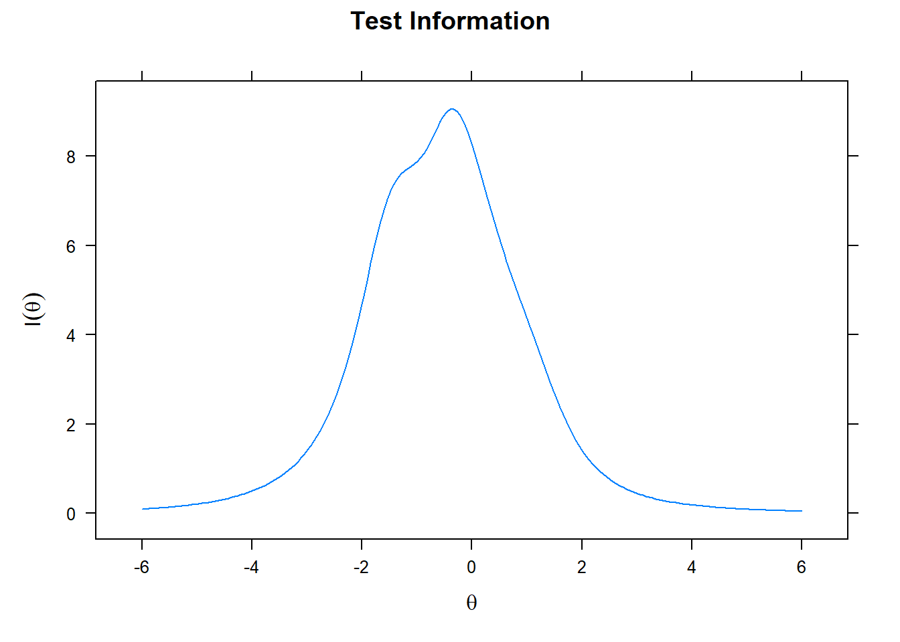
plot(DGS_IRT6_5) #expected score curve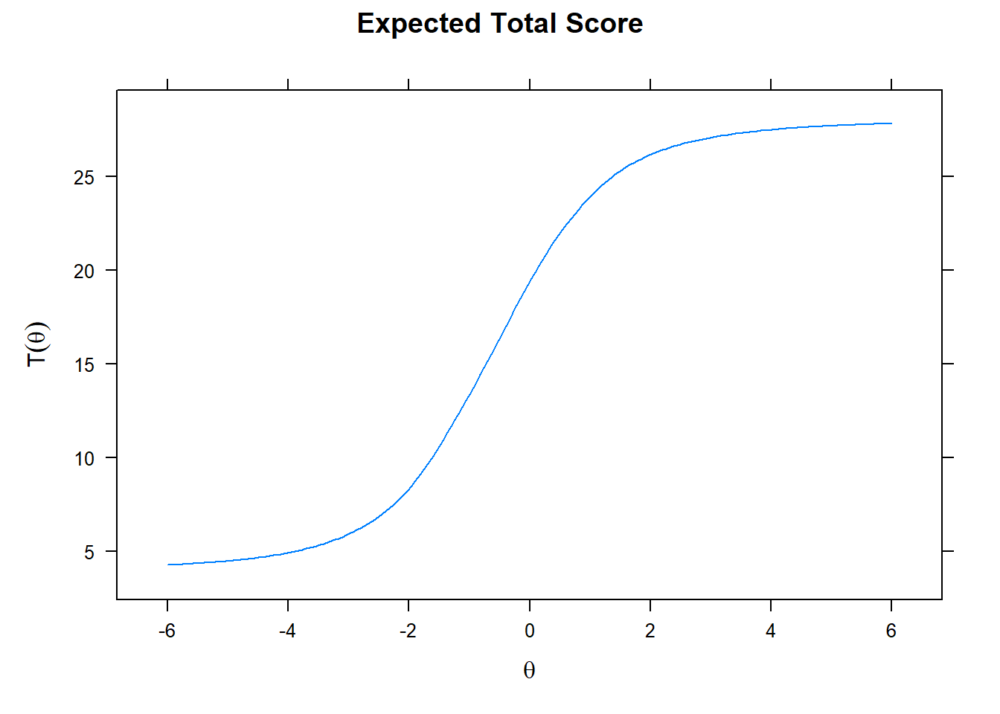
#suggest dropping 1
DGS_6model_5 <- DGS_6model_5 %>%
select(!c(DGS_1))
DGS_IRT6_5 = mirt(data = DGS_6model_5,
model = 1, #this is for one factor
itemtype = "gpcmIRT" #generalized partial credit model
)##
Iteration: 1, Log-Lik: -4206.850, Max-Change: 1.05417
Iteration: 2, Log-Lik: -4053.335, Max-Change: 0.54018
Iteration: 3, Log-Lik: -4021.206, Max-Change: 0.26979
Iteration: 4, Log-Lik: -4009.264, Max-Change: 0.38832
Iteration: 5, Log-Lik: -4002.400, Max-Change: 0.22762
Iteration: 6, Log-Lik: -3998.311, Max-Change: 0.15889
Iteration: 7, Log-Lik: -3996.803, Max-Change: 0.12872
Iteration: 8, Log-Lik: -3995.301, Max-Change: 0.11340
Iteration: 9, Log-Lik: -3994.293, Max-Change: 0.08602
Iteration: 10, Log-Lik: -3993.515, Max-Change: 0.07358
Iteration: 11, Log-Lik: -3993.140, Max-Change: 0.06409
Iteration: 12, Log-Lik: -3992.870, Max-Change: 0.05724
Iteration: 13, Log-Lik: -3992.036, Max-Change: 0.02794
Iteration: 14, Log-Lik: -3991.992, Max-Change: 0.02558
Iteration: 15, Log-Lik: -3991.959, Max-Change: 0.02312
Iteration: 16, Log-Lik: -3991.900, Max-Change: 0.01987
Iteration: 17, Log-Lik: -3991.876, Max-Change: 0.01842
Iteration: 18, Log-Lik: -3991.861, Max-Change: 0.01751
Iteration: 19, Log-Lik: -3991.808, Max-Change: 0.00957
Iteration: 20, Log-Lik: -3991.803, Max-Change: 0.00814
Iteration: 21, Log-Lik: -3991.800, Max-Change: 0.00830
Iteration: 22, Log-Lik: -3991.786, Max-Change: 0.00538
Iteration: 23, Log-Lik: -3991.784, Max-Change: 0.00528
Iteration: 24, Log-Lik: -3991.783, Max-Change: 0.00375
Iteration: 25, Log-Lik: -3991.782, Max-Change: 0.00146
Iteration: 26, Log-Lik: -3991.781, Max-Change: 0.00329
Iteration: 27, Log-Lik: -3991.781, Max-Change: 0.00225
Iteration: 28, Log-Lik: -3991.780, Max-Change: 0.00500
Iteration: 29, Log-Lik: -3991.780, Max-Change: 0.00097
Iteration: 30, Log-Lik: -3991.779, Max-Change: 0.00153
Iteration: 31, Log-Lik: -3991.779, Max-Change: 0.00346
Iteration: 32, Log-Lik: -3991.779, Max-Change: 0.00017
Iteration: 33, Log-Lik: -3991.779, Max-Change: 0.00134
Iteration: 34, Log-Lik: -3991.779, Max-Change: 0.00017
Iteration: 35, Log-Lik: -3991.779, Max-Change: 0.00192
Iteration: 36, Log-Lik: -3991.778, Max-Change: 0.00338
Iteration: 37, Log-Lik: -3991.778, Max-Change: 0.00044
Iteration: 38, Log-Lik: -3991.778, Max-Change: 0.00017
Iteration: 39, Log-Lik: -3991.778, Max-Change: 0.00013
Iteration: 40, Log-Lik: -3991.778, Max-Change: 0.00064
Iteration: 41, Log-Lik: -3991.778, Max-Change: 0.00061
Iteration: 42, Log-Lik: -3991.778, Max-Change: 0.00012
Iteration: 43, Log-Lik: -3991.778, Max-Change: 0.00012
Iteration: 44, Log-Lik: -3991.778, Max-Change: 0.00061
Iteration: 45, Log-Lik: -3991.778, Max-Change: 0.00059
Iteration: 46, Log-Lik: -3991.777, Max-Change: 0.00013
Iteration: 47, Log-Lik: -3991.777, Max-Change: 0.00059
Iteration: 48, Log-Lik: -3991.777, Max-Change: 0.00011
Iteration: 49, Log-Lik: -3991.777, Max-Change: 0.00011
Iteration: 50, Log-Lik: -3991.777, Max-Change: 0.00056
Iteration: 51, Log-Lik: -3991.777, Max-Change: 0.00057
Iteration: 52, Log-Lik: -3991.777, Max-Change: 0.00010
Iteration: 53, Log-Lik: -3991.777, Max-Change: 0.00053
Iteration: 54, Log-Lik: -3991.777, Max-Change: 0.00011
Iteration: 55, Log-Lik: -3991.777, Max-Change: 0.00011
Iteration: 56, Log-Lik: -3991.777, Max-Change: 0.00053
Iteration: 57, Log-Lik: -3991.777, Max-Change: 0.00050
Iteration: 58, Log-Lik: -3991.777, Max-Change: 0.00011
Iteration: 59, Log-Lik: -3991.777, Max-Change: 0.00052
Iteration: 60, Log-Lik: -3991.777, Max-Change: 0.00010summary(DGS_IRT6_5)## F1 h2
## DGS_21 0.880 0.774
## DGS_44 0.481 0.232
## DGS_65 0.505 0.255
##
## SS loadings: 1.261
## Proportion Var: 0.42
##
## Factor correlations:
##
## F1
## F1 1#person fit
#fscores(DGS_IRT6_5) #factor score for each participants
#mirt::itemfit(DGS_IRT6_5)
#mirt::personfit(DGS_IRT6_5)DGS_IRT6_6 = mirt(data = DGS_6model_6,
model = 1, #this is for one factor
itemtype = "gpcmIRT" #generalized partial credit model
)##
Iteration: 1, Log-Lik: -10097.755, Max-Change: 1.84549
Iteration: 2, Log-Lik: -9584.527, Max-Change: 0.55182
Iteration: 3, Log-Lik: -9566.351, Max-Change: 0.21630
Iteration: 4, Log-Lik: -9559.819, Max-Change: 0.11420
Iteration: 5, Log-Lik: -9557.652, Max-Change: 0.11058
Iteration: 6, Log-Lik: -9556.299, Max-Change: 0.05683
Iteration: 7, Log-Lik: -9555.298, Max-Change: 0.03409
Iteration: 8, Log-Lik: -9554.857, Max-Change: 0.02711
Iteration: 9, Log-Lik: -9554.618, Max-Change: 0.01910
Iteration: 10, Log-Lik: -9554.357, Max-Change: 0.00662
Iteration: 11, Log-Lik: -9554.329, Max-Change: 0.00558
Iteration: 12, Log-Lik: -9554.314, Max-Change: 0.00591
Iteration: 13, Log-Lik: -9554.290, Max-Change: 0.00279
Iteration: 14, Log-Lik: -9554.284, Max-Change: 0.00113
Iteration: 15, Log-Lik: -9554.282, Max-Change: 0.00132
Iteration: 16, Log-Lik: -9554.280, Max-Change: 0.00081
Iteration: 17, Log-Lik: -9554.279, Max-Change: 0.00041
Iteration: 18, Log-Lik: -9554.278, Max-Change: 0.00029
Iteration: 19, Log-Lik: -9554.278, Max-Change: 0.00072
Iteration: 20, Log-Lik: -9554.278, Max-Change: 0.00019
Iteration: 21, Log-Lik: -9554.278, Max-Change: 0.00079
Iteration: 22, Log-Lik: -9554.277, Max-Change: 0.00008summary(DGS_IRT6_6)## F1 h2
## DGS_6 0.515 0.2648
## DGS_38 0.379 0.1439
## DGS_39 0.503 0.2534
## DGS_45 0.243 0.0589
## DGS_67 0.356 0.1267
## DGS_70 0.311 0.0966
## DGS_71 0.329 0.1084
##
## SS loadings: 1.053
## Proportion Var: 0.15
##
## Factor correlations:
##
## F1
## F1 1coef(DGS_IRT6_6, IRTpars = T)## $DGS_6
## a1 b1 b2 b3 b4 b5 b6 c
## par 1.021 -0.948 -0.06 0.804 0.793 1.871 2.25 0
##
## $DGS_38
## a1 b1 b2 b3 b4 b5 b6 c
## par 0.698 -0.449 0.401 1.189 2.589 1.938 3 0
##
## $DGS_39
## a1 b1 b2 b3 b4 b5 b6 c
## par 0.992 -0.639 -0.01 0.502 0.901 2.097 1.803 0
##
## $DGS_45
## a1 b1 b2 b3 b4 b5 b6 c
## par 0.426 -1.864 -1.884 -0.776 1.215 -0.82 0.761 0
##
## $DGS_67
## a1 b1 b2 b3 b4 b5 b6 c
## par 0.648 -2.162 -2.003 -0.926 -0.279 0.237 1.284 0
##
## $DGS_70
## a1 b1 b2 b3 b4 b5 b6 c
## par 0.557 -2.026 -0.704 0.616 1.155 1.081 1.513 0
##
## $DGS_71
## a1 b1 b2 b3 b4 b5 b6 c
## par 0.593 -1.022 0.262 1.519 2.713 1.479 3.394 0
##
## $GroupPars
## MEAN_1 COV_11
## par 0 1itemplot(DGS_IRT6_6, 1, type = "trace",
main = "probability function for DGS_6")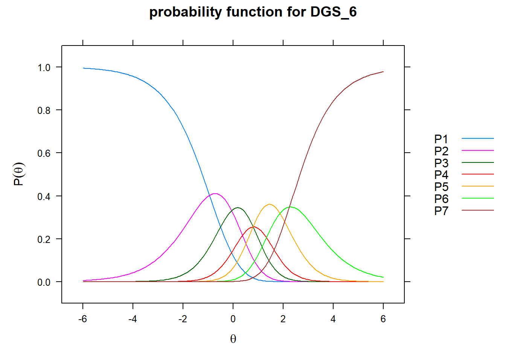
plot(DGS_IRT6_6, type = "trace")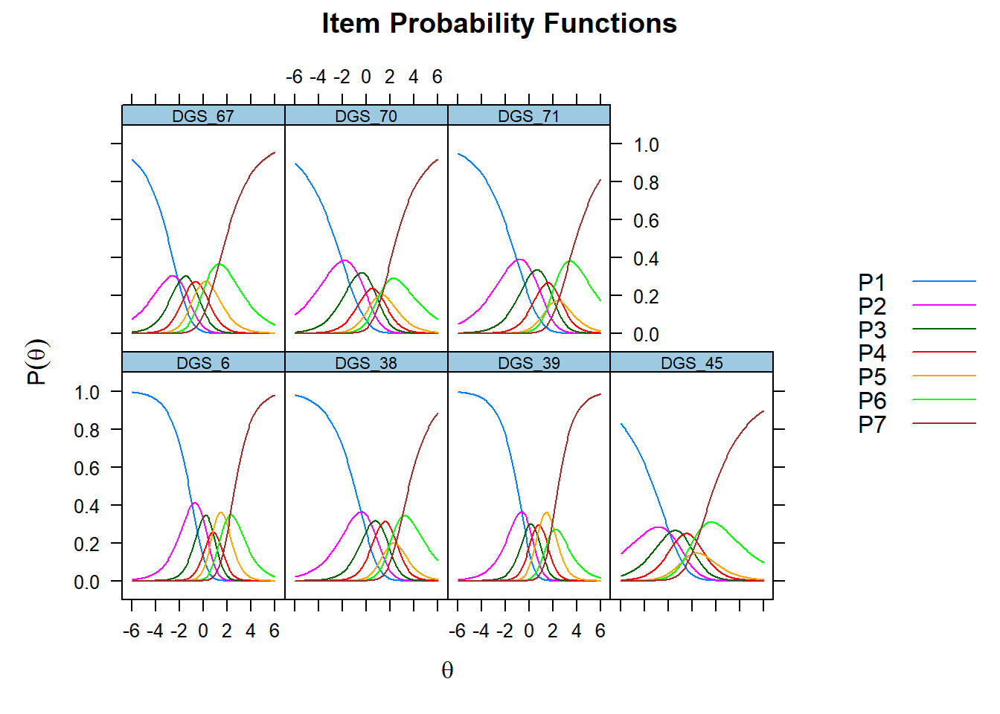
plot(DGS_IRT6_6, type = "info")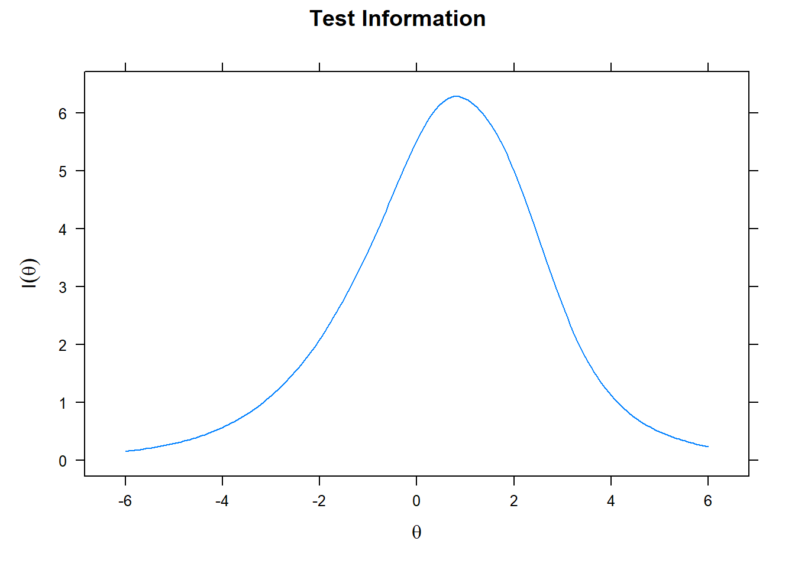
plot(DGS_IRT6_6) #expected score curve
#suggest dropping 45
DGS_6model_6 <- DGS_6model_6 %>%
select(!c(DGS_45))
DGS_IRT6_6 = mirt(data = DGS_6model_6,
model = 1, #this is for one factor
itemtype = "gpcmIRT" #generalized partial credit model
)##
Iteration: 1, Log-Lik: -8519.768, Max-Change: 1.78293
Iteration: 2, Log-Lik: -8121.174, Max-Change: 0.54646
Iteration: 3, Log-Lik: -8100.490, Max-Change: 0.32860
Iteration: 4, Log-Lik: -8092.363, Max-Change: 0.19408
Iteration: 5, Log-Lik: -8089.248, Max-Change: 0.11313
Iteration: 6, Log-Lik: -8087.632, Max-Change: 0.06116
Iteration: 7, Log-Lik: -8087.130, Max-Change: 0.03997
Iteration: 8, Log-Lik: -8086.389, Max-Change: 0.03045
Iteration: 9, Log-Lik: -8085.968, Max-Change: 0.02300
Iteration: 10, Log-Lik: -8085.530, Max-Change: 0.01165
Iteration: 11, Log-Lik: -8085.455, Max-Change: 0.00867
Iteration: 12, Log-Lik: -8085.409, Max-Change: 0.00589
Iteration: 13, Log-Lik: -8085.370, Max-Change: 0.00580
Iteration: 14, Log-Lik: -8085.354, Max-Change: 0.00308
Iteration: 15, Log-Lik: -8085.344, Max-Change: 0.00274
Iteration: 16, Log-Lik: -8085.333, Max-Change: 0.00196
Iteration: 17, Log-Lik: -8085.329, Max-Change: 0.00104
Iteration: 18, Log-Lik: -8085.328, Max-Change: 0.00080
Iteration: 19, Log-Lik: -8085.326, Max-Change: 0.00235
Iteration: 20, Log-Lik: -8085.325, Max-Change: 0.00052
Iteration: 21, Log-Lik: -8085.324, Max-Change: 0.00020
Iteration: 22, Log-Lik: -8085.324, Max-Change: 0.00012
Iteration: 23, Log-Lik: -8085.324, Max-Change: 0.00055
Iteration: 24, Log-Lik: -8085.324, Max-Change: 0.00012
Iteration: 25, Log-Lik: -8085.324, Max-Change: 0.00041
Iteration: 26, Log-Lik: -8085.324, Max-Change: 0.00061
Iteration: 27, Log-Lik: -8085.324, Max-Change: 0.00039
Iteration: 28, Log-Lik: -8085.324, Max-Change: 0.00011
Iteration: 29, Log-Lik: -8085.324, Max-Change: 0.00039
Iteration: 30, Log-Lik: -8085.324, Max-Change: 0.00054
Iteration: 31, Log-Lik: -8085.324, Max-Change: 0.00012
Iteration: 32, Log-Lik: -8085.324, Max-Change: 0.00008summary(DGS_IRT6_6)## F1 h2
## DGS_6 0.606 0.3676
## DGS_38 0.387 0.1495
## DGS_39 0.559 0.3130
## DGS_67 0.296 0.0876
## DGS_70 0.245 0.0598
## DGS_71 0.334 0.1114
##
## SS loadings: 1.089
## Proportion Var: 0.182
##
## Factor correlations:
##
## F1
## F1 1#need some thoughts and modification here. The categorical imperative items are not lumping very well together.
#person fit
#fscores(DGS_IRT6_6) #factor score for each participants
#mirt::itemfit(DGS_IRT6_6)
#mirt::personfit(DGS_IRT6_6)